32 Distribution
Charts of how the values of one numeric variable spread: violins, densities, histograms, boxplots and ridgelines (the R Graph Gallery distribution family), then beeswarms, strip plots, rugs and ECDFs.
Distribution charts put the values on :x and the groups (if any) on :y, so they are horizontal by default. :flip true draws the same plot vertically.
(ns use-cases.distribution
(:require [fastmath.random :as r]
[fastmath.stats :as stats]
[cljplot2.chart :as chart]
[cljplot2.core :as plot]
[cljplot2.data.levels :as levels]
[notebook-utils :as nu]))(def iris (nu/dataset :iris))| sepal-length | sepal-width | petal-length | petal-width | species |
|---|---|---|---|---|
| 5.1 | 3.5 | 1.4 | 0.2 | setosa |
| 4.9 | 3 | 1.4 | 0.2 | setosa |
| 4.7 | 3.2 | 1.3 | 0.2 | setosa |
| 4.6 | 3.1 | 1.5 | 0.2 | setosa |
| 5 | 3.6 | 1.4 | 0.2 | setosa |
| 5.4 | 3.9 | 1.7 | 0.4 | setosa |
| 4.6 | 3.4 | 1.4 | 0.3 | setosa |
| 5 | 3.4 | 1.5 | 0.2 | setosa |
| 4.4 | 2.9 | 1.4 | 0.2 | setosa |
| 4.9 | 3.1 | 1.5 | 0.1 | setosa |
| 5.4 | 3.7 | 1.5 | 0.2 | setosa |
| 4.8 | 3.4 | 1.6 | 0.2 | setosa |
| 4.8 | 3 | 1.4 | 0.1 | setosa |
| 4.3 | 3 | 1.1 | 0.1 | setosa |
| 5.8 | 4 | 1.2 | 0.2 | setosa |
| 5.7 | 4.4 | 1.5 | 0.4 | setosa |
| 5.4 | 3.9 | 1.3 | 0.4 | setosa |
| 5.1 | 3.5 | 1.4 | 0.3 | setosa |
| 5.7 | 3.8 | 1.7 | 0.3 | setosa |
| 5.1 | 3.8 | 1.5 | 0.3 | setosa |
| 5.4 | 3.4 | 1.7 | 0.2 | setosa |
| 5.1 | 3.7 | 1.5 | 0.4 | setosa |
| 4.6 | 3.6 | 1 | 0.2 | setosa |
| 5.1 | 3.3 | 1.7 | 0.5 | setosa |
| 4.8 | 3.4 | 1.9 | 0.2 | setosa |
| 5 | 3 | 1.6 | 0.2 | setosa |
| 5 | 3.4 | 1.6 | 0.4 | setosa |
| 5.2 | 3.5 | 1.5 | 0.2 | setosa |
| 5.2 | 3.4 | 1.4 | 0.2 | setosa |
| 4.7 | 3.2 | 1.6 | 0.2 | setosa |
| 4.8 | 3.1 | 1.6 | 0.2 | setosa |
| 5.4 | 3.4 | 1.5 | 0.4 | setosa |
| 5.2 | 4.1 | 1.5 | 0.1 | setosa |
| 5.5 | 4.2 | 1.4 | 0.2 | setosa |
| 4.9 | 3.1 | 1.5 | 0.2 | setosa |
| 5 | 3.2 | 1.2 | 0.2 | setosa |
| 5.5 | 3.5 | 1.3 | 0.2 | setosa |
| 4.9 | 3.6 | 1.4 | 0.1 | setosa |
| 4.4 | 3 | 1.3 | 0.2 | setosa |
| 5.1 | 3.4 | 1.5 | 0.2 | setosa |
| 5 | 3.5 | 1.3 | 0.3 | setosa |
| 4.5 | 2.3 | 1.3 | 0.3 | setosa |
| 4.4 | 3.2 | 1.3 | 0.2 | setosa |
| 5 | 3.5 | 1.6 | 0.6 | setosa |
| 5.1 | 3.8 | 1.9 | 0.4 | setosa |
| 4.8 | 3 | 1.4 | 0.3 | setosa |
| 5.1 | 3.8 | 1.6 | 0.2 | setosa |
| 4.6 | 3.2 | 1.4 | 0.2 | setosa |
| 5.3 | 3.7 | 1.5 | 0.2 | setosa |
| 5 | 3.3 | 1.4 | 0.2 | setosa |
| 7 | 3.2 | 4.7 | 1.4 | versicolor |
| 6.4 | 3.2 | 4.5 | 1.5 | versicolor |
| 6.9 | 3.1 | 4.9 | 1.5 | versicolor |
| 5.5 | 2.3 | 4 | 1.3 | versicolor |
| 6.5 | 2.8 | 4.6 | 1.5 | versicolor |
| 5.7 | 2.8 | 4.5 | 1.3 | versicolor |
| 6.3 | 3.3 | 4.7 | 1.6 | versicolor |
| 4.9 | 2.4 | 3.3 | 1 | versicolor |
| 6.6 | 2.9 | 4.6 | 1.3 | versicolor |
| 5.2 | 2.7 | 3.9 | 1.4 | versicolor |
| 5 | 2 | 3.5 | 1 | versicolor |
| 5.9 | 3 | 4.2 | 1.5 | versicolor |
| 6 | 2.2 | 4 | 1 | versicolor |
| 6.1 | 2.9 | 4.7 | 1.4 | versicolor |
| 5.6 | 2.9 | 3.6 | 1.3 | versicolor |
| 6.7 | 3.1 | 4.4 | 1.4 | versicolor |
| 5.6 | 3 | 4.5 | 1.5 | versicolor |
| 5.8 | 2.7 | 4.1 | 1 | versicolor |
| 6.2 | 2.2 | 4.5 | 1.5 | versicolor |
| 5.6 | 2.5 | 3.9 | 1.1 | versicolor |
| 5.9 | 3.2 | 4.8 | 1.8 | versicolor |
| 6.1 | 2.8 | 4 | 1.3 | versicolor |
| 6.3 | 2.5 | 4.9 | 1.5 | versicolor |
| 6.1 | 2.8 | 4.7 | 1.2 | versicolor |
| 6.4 | 2.9 | 4.3 | 1.3 | versicolor |
| 6.6 | 3 | 4.4 | 1.4 | versicolor |
| 6.8 | 2.8 | 4.8 | 1.4 | versicolor |
| 6.7 | 3 | 5 | 1.7 | versicolor |
| 6 | 2.9 | 4.5 | 1.5 | versicolor |
| 5.7 | 2.6 | 3.5 | 1 | versicolor |
| 5.5 | 2.4 | 3.8 | 1.1 | versicolor |
| 5.5 | 2.4 | 3.7 | 1 | versicolor |
| 5.8 | 2.7 | 3.9 | 1.2 | versicolor |
| 6 | 2.7 | 5.1 | 1.6 | versicolor |
| 5.4 | 3 | 4.5 | 1.5 | versicolor |
| 6 | 3.4 | 4.5 | 1.6 | versicolor |
| 6.7 | 3.1 | 4.7 | 1.5 | versicolor |
| 6.3 | 2.3 | 4.4 | 1.3 | versicolor |
| 5.6 | 3 | 4.1 | 1.3 | versicolor |
| 5.5 | 2.5 | 4 | 1.3 | versicolor |
| 5.5 | 2.6 | 4.4 | 1.2 | versicolor |
| 6.1 | 3 | 4.6 | 1.4 | versicolor |
| 5.8 | 2.6 | 4 | 1.2 | versicolor |
| 5 | 2.3 | 3.3 | 1 | versicolor |
| 5.6 | 2.7 | 4.2 | 1.3 | versicolor |
| 5.7 | 3 | 4.2 | 1.2 | versicolor |
| 5.7 | 2.9 | 4.2 | 1.3 | versicolor |
| 6.2 | 2.9 | 4.3 | 1.3 | versicolor |
| 5.1 | 2.5 | 3 | 1.1 | versicolor |
| 5.7 | 2.8 | 4.1 | 1.3 | versicolor |
| … | … | … | … | … |
(def mtcars (nu/dataset :mtcars))| model | mpg | cyl | disp | hp | drat | wt | qsec | vs | am | gear | carb |
|---|---|---|---|---|---|---|---|---|---|---|---|
| Mazda RX4 | 21 | 6 | 160 | 110 | 3.9 | 2.62 | 16.46 | 0 | 1 | 4 | 4 |
| Mazda RX4 Wag | 21 | 6 | 160 | 110 | 3.9 | 2.875 | 17.02 | 0 | 1 | 4 | 4 |
| Datsun 710 | 22.8 | 4 | 108 | 93 | 3.85 | 2.32 | 18.61 | 1 | 1 | 4 | 1 |
| Hornet 4 Drive | 21.4 | 6 | 258 | 110 | 3.08 | 3.215 | 19.44 | 1 | 0 | 3 | 1 |
| Hornet Sportabout | 18.7 | 8 | 360 | 175 | 3.15 | 3.44 | 17.02 | 0 | 0 | 3 | 2 |
| Valiant | 18.1 | 6 | 225 | 105 | 2.76 | 3.46 | 20.22 | 1 | 0 | 3 | 1 |
| Duster 360 | 14.3 | 8 | 360 | 245 | 3.21 | 3.57 | 15.84 | 0 | 0 | 3 | 4 |
| Merc 240D | 24.4 | 4 | 146.7 | 62 | 3.69 | 3.19 | 20 | 1 | 0 | 4 | 2 |
| Merc 230 | 22.8 | 4 | 140.8 | 95 | 3.92 | 3.15 | 22.9 | 1 | 0 | 4 | 2 |
| Merc 280 | 19.2 | 6 | 167.6 | 123 | 3.92 | 3.44 | 18.3 | 1 | 0 | 4 | 4 |
| Merc 280C | 17.8 | 6 | 167.6 | 123 | 3.92 | 3.44 | 18.9 | 1 | 0 | 4 | 4 |
| Merc 450SE | 16.4 | 8 | 275.8 | 180 | 3.07 | 4.07 | 17.4 | 0 | 0 | 3 | 3 |
| Merc 450SL | 17.3 | 8 | 275.8 | 180 | 3.07 | 3.73 | 17.6 | 0 | 0 | 3 | 3 |
| Merc 450SLC | 15.2 | 8 | 275.8 | 180 | 3.07 | 3.78 | 18 | 0 | 0 | 3 | 3 |
| Cadillac Fleetwood | 10.4 | 8 | 472 | 205 | 2.93 | 5.25 | 17.98 | 0 | 0 | 3 | 4 |
| Lincoln Continental | 10.4 | 8 | 460 | 215 | 3 | 5.424 | 17.82 | 0 | 0 | 3 | 4 |
| Chrysler Imperial | 14.7 | 8 | 440 | 230 | 3.23 | 5.345 | 17.42 | 0 | 0 | 3 | 4 |
| Fiat 128 | 32.4 | 4 | 78.7 | 66 | 4.08 | 2.2 | 19.47 | 1 | 1 | 4 | 1 |
| Honda Civic | 30.4 | 4 | 75.7 | 52 | 4.93 | 1.615 | 18.52 | 1 | 1 | 4 | 2 |
| Toyota Corolla | 33.9 | 4 | 71.1 | 65 | 4.22 | 1.835 | 19.9 | 1 | 1 | 4 | 1 |
| Toyota Corona | 21.5 | 4 | 120.1 | 97 | 3.7 | 2.465 | 20.01 | 1 | 0 | 3 | 1 |
| Dodge Challenger | 15.5 | 8 | 318 | 150 | 2.76 | 3.52 | 16.87 | 0 | 0 | 3 | 2 |
| AMC Javelin | 15.2 | 8 | 304 | 150 | 3.15 | 3.435 | 17.3 | 0 | 0 | 3 | 2 |
| Camaro Z28 | 13.3 | 8 | 350 | 245 | 3.73 | 3.84 | 15.41 | 0 | 0 | 3 | 4 |
| Pontiac Firebird | 19.2 | 8 | 400 | 175 | 3.08 | 3.845 | 17.05 | 0 | 0 | 3 | 2 |
| Fiat X1-9 | 27.3 | 4 | 79 | 66 | 4.08 | 1.935 | 18.9 | 1 | 1 | 4 | 1 |
| Porsche 914-2 | 26 | 4 | 120.3 | 91 | 4.43 | 2.14 | 16.7 | 0 | 1 | 5 | 2 |
| Lotus Europa | 30.4 | 4 | 95.1 | 113 | 3.77 | 1.513 | 16.9 | 1 | 1 | 5 | 2 |
| Ford Pantera L | 15.8 | 8 | 351 | 264 | 4.22 | 3.17 | 14.5 | 0 | 1 | 5 | 4 |
| Ferrari Dino | 19.7 | 6 | 145 | 175 | 3.62 | 2.77 | 15.5 | 0 | 1 | 5 | 6 |
| Maserati Bora | 15 | 8 | 301 | 335 | 3.54 | 3.57 | 14.6 | 0 | 1 | 5 | 8 |
| Volvo 142E | 21.4 | 4 | 121 | 109 | 4.11 | 2.78 | 18.6 | 1 | 1 | 4 | 2 |
(def faithful (nu/dataset :faithful))| eruptions | waiting |
|---|---|
| 3.6 | 79 |
| 1.8 | 54 |
| 3.333 | 74 |
| 2.283 | 62 |
| 4.533 | 85 |
| 2.883 | 55 |
| 4.7 | 88 |
| 3.6 | 85 |
| 1.95 | 51 |
| 4.35 | 85 |
| 1.833 | 54 |
| 3.917 | 84 |
| 4.2 | 78 |
| 1.75 | 47 |
| 4.7 | 83 |
| 2.167 | 52 |
| 1.75 | 62 |
| 4.8 | 84 |
| 1.6 | 52 |
| 4.25 | 79 |
| 1.8 | 51 |
| 1.75 | 47 |
| 3.45 | 78 |
| 3.067 | 69 |
| 4.533 | 74 |
| 3.6 | 83 |
| 1.967 | 55 |
| 4.083 | 76 |
| 3.85 | 78 |
| 4.433 | 79 |
| 4.3 | 73 |
| 4.467 | 77 |
| 3.367 | 66 |
| 4.033 | 80 |
| 3.833 | 74 |
| 2.017 | 52 |
| 1.867 | 48 |
| 4.833 | 80 |
| 1.833 | 59 |
| 4.783 | 90 |
| 4.35 | 80 |
| 1.883 | 58 |
| 4.567 | 84 |
| 1.75 | 58 |
| 4.533 | 73 |
| 3.317 | 83 |
| 3.833 | 64 |
| 2.1 | 53 |
| 4.633 | 82 |
| 2 | 59 |
| 4.8 | 75 |
| 4.716 | 90 |
| 1.833 | 54 |
| 4.833 | 80 |
| 1.733 | 54 |
| 4.883 | 83 |
| 3.717 | 71 |
| 1.667 | 64 |
| 4.567 | 77 |
| 4.317 | 81 |
| 2.233 | 59 |
| 4.5 | 84 |
| 1.75 | 48 |
| 4.8 | 82 |
| 1.817 | 60 |
| 4.4 | 92 |
| 4.167 | 78 |
| 4.7 | 78 |
| 2.067 | 65 |
| 4.7 | 73 |
| 4.033 | 82 |
| 1.967 | 56 |
| 4.5 | 79 |
| 4 | 71 |
| 1.983 | 62 |
| 5.067 | 76 |
| 2.017 | 60 |
| 4.567 | 78 |
| 3.883 | 76 |
| 3.6 | 83 |
| 4.133 | 75 |
| 4.333 | 82 |
| 4.1 | 70 |
| 2.633 | 65 |
| 4.067 | 73 |
| 4.933 | 88 |
| 3.95 | 76 |
| 4.517 | 80 |
| 2.167 | 48 |
| 4 | 86 |
| 2.2 | 60 |
| 4.333 | 90 |
| 1.867 | 50 |
| 4.817 | 78 |
| 1.833 | 63 |
| 4.3 | 72 |
| 4.667 | 84 |
| 3.75 | 75 |
| 1.867 | 51 |
| 4.9 | 82 |
| … | … |
(def barley (nu/dataset :barley))| yield | variety | year | site |
|---|---|---|---|
| 27 | Manchuria | 1931 | University Farm |
| 48.86667 | Manchuria | 1931 | Waseca |
| 27.43334 | Manchuria | 1931 | Morris |
| 39.93333 | Manchuria | 1931 | Crookston |
| 32.96667 | Manchuria | 1931 | Grand Rapids |
| 28.96667 | Manchuria | 1931 | Duluth |
| 43.06666 | Glabron | 1931 | University Farm |
| 55.2 | Glabron | 1931 | Waseca |
| 28.76667 | Glabron | 1931 | Morris |
| 38.13333 | Glabron | 1931 | Crookston |
| 29.13333 | Glabron | 1931 | Grand Rapids |
| 29.66667 | Glabron | 1931 | Duluth |
| 35.13333 | Svansota | 1931 | University Farm |
| 47.33333 | Svansota | 1931 | Waseca |
| 25.76667 | Svansota | 1931 | Morris |
| 40.46667 | Svansota | 1931 | Crookston |
| 29.66667 | Svansota | 1931 | Grand Rapids |
| 25.7 | Svansota | 1931 | Duluth |
| 39.9 | Velvet | 1931 | University Farm |
| 50.23333 | Velvet | 1931 | Waseca |
| 26.13333 | Velvet | 1931 | Morris |
| 41.33333 | Velvet | 1931 | Crookston |
| 23.03333 | Velvet | 1931 | Grand Rapids |
| 26.3 | Velvet | 1931 | Duluth |
| 36.56666 | Trebi | 1931 | University Farm |
| 63.8333 | Trebi | 1931 | Waseca |
| 43.76667 | Trebi | 1931 | Morris |
| 46.93333 | Trebi | 1931 | Crookston |
| 29.76667 | Trebi | 1931 | Grand Rapids |
| 33.93333 | Trebi | 1931 | Duluth |
| 43.26667 | No. 457 | 1931 | University Farm |
| 58.1 | No. 457 | 1931 | Waseca |
| 28.7 | No. 457 | 1931 | Morris |
| 45.66667 | No. 457 | 1931 | Crookston |
| 32.16667 | No. 457 | 1931 | Grand Rapids |
| 33.6 | No. 457 | 1931 | Duluth |
| 36.6 | No. 462 | 1931 | University Farm |
| 65.7667 | No. 462 | 1931 | Waseca |
| 30.36667 | No. 462 | 1931 | Morris |
| 48.56666 | No. 462 | 1931 | Crookston |
| 24.93334 | No. 462 | 1931 | Grand Rapids |
| 28.1 | No. 462 | 1931 | Duluth |
| 32.76667 | Peatland | 1931 | University Farm |
| 48.56666 | Peatland | 1931 | Waseca |
| 29.86667 | Peatland | 1931 | Morris |
| 41.6 | Peatland | 1931 | Crookston |
| 34.7 | Peatland | 1931 | Grand Rapids |
| 32 | Peatland | 1931 | Duluth |
| 24.66667 | No. 475 | 1931 | University Farm |
| 46.76667 | No. 475 | 1931 | Waseca |
| 22.6 | No. 475 | 1931 | Morris |
| 44.1 | No. 475 | 1931 | Crookston |
| 19.7 | No. 475 | 1931 | Grand Rapids |
| 33.06666 | No. 475 | 1931 | Duluth |
| 39.3 | Wisconsin No. 38 | 1931 | University Farm |
| 58.8 | Wisconsin No. 38 | 1931 | Waseca |
| 29.46667 | Wisconsin No. 38 | 1931 | Morris |
| 49.86667 | Wisconsin No. 38 | 1931 | Crookston |
| 34.46667 | Wisconsin No. 38 | 1931 | Grand Rapids |
| 31.6 | Wisconsin No. 38 | 1931 | Duluth |
| 26.9 | Manchuria | 1932 | University Farm |
| 33.46667 | Manchuria | 1932 | Waseca |
| 34.36666 | Manchuria | 1932 | Morris |
| 32.96667 | Manchuria | 1932 | Crookston |
| 22.13333 | Manchuria | 1932 | Grand Rapids |
| 22.56667 | Manchuria | 1932 | Duluth |
| 36.8 | Glabron | 1932 | University Farm |
| 37.73333 | Glabron | 1932 | Waseca |
| 35.13333 | Glabron | 1932 | Morris |
| 26.16667 | Glabron | 1932 | Crookston |
| 14.43333 | Glabron | 1932 | Grand Rapids |
| 25.86667 | Glabron | 1932 | Duluth |
| 27.43334 | Svansota | 1932 | University Farm |
| 38.5 | Svansota | 1932 | Waseca |
| 35.03333 | Svansota | 1932 | Morris |
| 20.63333 | Svansota | 1932 | Crookston |
| 16.63333 | Svansota | 1932 | Grand Rapids |
| 22.23333 | Svansota | 1932 | Duluth |
| 26.8 | Velvet | 1932 | University Farm |
| 37.4 | Velvet | 1932 | Waseca |
| 38.83333 | Velvet | 1932 | Morris |
| 32.06666 | Velvet | 1932 | Crookston |
| 32.23333 | Velvet | 1932 | Grand Rapids |
| 22.46667 | Velvet | 1932 | Duluth |
| 29.06667 | Trebi | 1932 | University Farm |
| 49.2333 | Trebi | 1932 | Waseca |
| 46.63333 | Trebi | 1932 | Morris |
| 41.83333 | Trebi | 1932 | Crookston |
| 20.63333 | Trebi | 1932 | Grand Rapids |
| 30.6 | Trebi | 1932 | Duluth |
| 26.43334 | No. 457 | 1932 | University Farm |
| 42.2 | No. 457 | 1932 | Waseca |
| 43.53334 | No. 457 | 1932 | Morris |
| 34.33333 | No. 457 | 1932 | Crookston |
| 19.46667 | No. 457 | 1932 | Grand Rapids |
| 22.7 | No. 457 | 1932 | Duluth |
| 25.56667 | No. 462 | 1932 | University Farm |
| 44.7 | No. 462 | 1932 | Waseca |
| 47 | No. 462 | 1932 | Morris |
| 30.53333 | No. 462 | 1932 | Crookston |
| … | … | … | … |
(def chem97 (nu/dataset :chem97))| lea | school | student | score | gender | age | gcsescore | gcsecnt |
|---|---|---|---|---|---|---|---|
| 1 | 1 | 1 | 4 | F | 3 | 6.625 | 0.33931571143033 |
| 1 | 1 | 2 | 10 | F | -3 | 7.625 | 1.33931571143033 |
| 1 | 1 | 3 | 10 | F | -4 | 7.25 | 0.96431571143033 |
| 1 | 1 | 4 | 10 | F | -2 | 7.5 | 1.21431571143033 |
| 1 | 1 | 5 | 8 | F | -1 | 6.444 | 0.15831571143033 |
| 1 | 1 | 6 | 10 | F | 4 | 7.75 | 1.46431571143033 |
| 1 | 1 | 7 | 6 | F | 1 | 6.75 | 0.46431571143033 |
| 1 | 1 | 8 | 8 | F | 4 | 6.909 | 0.62331571143033 |
| 1 | 1 | 9 | 4 | F | 3 | 6.375 | 0.0893157114303298 |
| 1 | 1 | 10 | 10 | F | 0 | 7.75 | 1.46431571143033 |
| 1 | 1 | 11 | 10 | F | -1 | 7.857 | 1.57131571143033 |
| 1 | 1 | 12 | 8 | F | 1 | 7.333 | 1.04731571143033 |
| 1 | 1 | 13 | 10 | F | 1 | 7.75 | 1.46431571143033 |
| 1 | 2 | 14 | 10 | M | 0 | 7.7 | 1.41431571143033 |
| 1 | 2 | 15 | 10 | M | -4 | 6.3 | 0.0143157114303296 |
| 1 | 2 | 16 | 10 | M | 5 | 7.3 | 1.01431571143033 |
| 1 | 2 | 17 | 8 | M | -3 | 6.636 | 0.35031571143033 |
| 1 | 2 | 18 | 10 | M | 4 | 7.272 | 0.98631571143033 |
| 1 | 2 | 19 | 10 | M | 0 | 7.2 | 0.91431571143033 |
| 1 | 2 | 20 | 4 | M | -3 | 6.454 | 0.16831571143033 |
| 1 | 2 | 21 | 6 | M | 4 | 6.818 | 0.532315711430329 |
| 1 | 2 | 22 | 10 | M | -5 | 7.3 | 1.01431571143033 |
| 1 | 2 | 23 | 2 | M | -1 | 6.2 | -0.08568428856967 |
| 1 | 2 | 24 | 10 | M | -2 | 7.111 | 0.82531571143033 |
| 1 | 2 | 25 | 10 | M | 2 | 6.8 | 0.51431571143033 |
| 1 | 2 | 26 | 8 | M | -4 | 6.5 | 0.21431571143033 |
| 1 | 2 | 27 | 10 | M | -5 | 6.727 | 0.44131571143033 |
| 1 | 2 | 28 | 6 | M | -6 | 7 | 0.71431571143033 |
| 1 | 2 | 29 | 10 | M | -2 | 7.7 | 1.41431571143033 |
| 1 | 2 | 30 | 10 | M | 3 | 7.3 | 1.01431571143033 |
| 1 | 2 | 31 | 8 | M | 3 | 6.4 | 0.11431571143033 |
| 1 | 2 | 32 | 10 | M | 2 | 6.833 | 0.54731571143033 |
| 1 | 2 | 33 | 10 | M | 2 | 7.363 | 1.07731571143033 |
| 1 | 2 | 34 | 4 | M | 5 | 6.6 | 0.314315711430329 |
| 1 | 2 | 35 | 10 | M | -1 | 7.6 | 1.31431571143033 |
| 1 | 2 | 36 | 10 | M | -2 | 7.555 | 1.26931571143033 |
| 1 | 2 | 37 | 10 | M | 0 | 7.7 | 1.41431571143033 |
| 1 | 2 | 38 | 10 | M | -5 | 7.7 | 1.41431571143033 |
| 1 | 2 | 39 | 8 | M | -5 | 6 | -0.28568428856967 |
| 1 | 2 | 40 | 10 | M | 3 | 8 | 1.71431571143033 |
| 1 | 2 | 41 | 10 | M | -6 | 6.6 | 0.314315711430329 |
| 2 | 3 | 42 | 8 | F | 3 | 6.555 | 0.26931571143033 |
| 2 | 3 | 43 | 0 | F | -1 | 4.75 | -1.53568428856967 |
| 2 | 3 | 44 | 6 | M | 0 | 4.625 | -1.66068428856967 |
| 2 | 4 | 45 | 6 | M | 0 | 5.25 | -1.03568428856967 |
| 2 | 4 | 46 | 10 | M | 5 | 6 | -0.28568428856967 |
| 2 | 4 | 47 | 10 | M | -3 | 6.375 | 0.0893157114303298 |
| 2 | 4 | 48 | 10 | M | 1 | 6.75 | 0.46431571143033 |
| 2 | 4 | 49 | 2 | M | 3 | 6 | -0.28568428856967 |
| 2 | 4 | 50 | 10 | M | 3 | 6.25 | -0.0356842885696702 |
| 2 | 4 | 51 | 10 | F | 3 | 7 | 0.71431571143033 |
| 2 | 5 | 52 | 8 | M | 5 | 6.25 | -0.0356842885696702 |
| 2 | 5 | 53 | 0 | F | 3 | 4.285 | -2.00068428856967 |
| 2 | 5 | 54 | 6 | M | -2 | 6.75 | 0.46431571143033 |
| 2 | 5 | 55 | 4 | M | 4 | 6.375 | 0.0893157114303298 |
| 2 | 5 | 56 | 6 | M | -2 | 6.777 | 0.49131571143033 |
| 2 | 5 | 57 | 8 | F | 0 | 7.125 | 0.83931571143033 |
| 2 | 5 | 58 | 6 | F | -3 | 6.285 | -6.84288569670066E-4 |
| 2 | 5 | 59 | 8 | M | -4 | 7.25 | 0.96431571143033 |
| 2 | 5 | 60 | 2 | M | -5 | 5.25 | -1.03568428856967 |
| 2 | 5 | 61 | 8 | F | 4 | 5.8 | -0.48568428856967 |
| 2 | 5 | 62 | 6 | F | 5 | 6 | -0.28568428856967 |
| 2 | 5 | 63 | 4 | F | -1 | 5.75 | -0.53568428856967 |
| 2 | 5 | 64 | 8 | M | 4 | 6.875 | 0.58931571143033 |
| 2 | 5 | 65 | 6 | M | 5 | 5.75 | -0.53568428856967 |
| 2 | 5 | 66 | 2 | M | -3 | 5.142 | -1.14368428856967 |
| 2 | 5 | 67 | 6 | F | 2 | 7.125 | 0.83931571143033 |
| 2 | 6 | 68 | 10 | F | 2 | 8 | 1.71431571143033 |
| 2 | 6 | 69 | 4 | F | 0 | 7 | 0.71431571143033 |
| 2 | 6 | 70 | 4 | F | 3 | 5.777 | -0.50868428856967 |
| 2 | 6 | 71 | 2 | F | -2 | 7 | 0.71431571143033 |
| 2 | 6 | 72 | 2 | F | -1 | 5.666 | -0.61968428856967 |
| 2 | 6 | 73 | 2 | M | 0 | 6.5 | 0.21431571143033 |
| 2 | 6 | 74 | 10 | F | 1 | 7.875 | 1.58931571143033 |
| 2 | 6 | 75 | 10 | F | -5 | 7.666 | 1.38031571143033 |
| 2 | 6 | 76 | 0 | M | 1 | 6.888 | 0.60231571143033 |
| 2 | 6 | 77 | 8 | F | 0 | 6.555 | 0.26931571143033 |
| 2 | 6 | 78 | 0 | F | 2 | 5.666 | -0.61968428856967 |
| 2 | 6 | 79 | 8 | M | 0 | 6.5 | 0.21431571143033 |
| 2 | 6 | 80 | 2 | F | -4 | 5.777 | -0.50868428856967 |
| 2 | 6 | 81 | 4 | F | 4 | 7 | 0.71431571143033 |
| 2 | 7 | 82 | 4 | F | -5 | 5.2 | -1.08568428856967 |
| 2 | 7 | 83 | 0 | F | -3 | 5 | -1.28568428856967 |
| 2 | 7 | 84 | 4 | F | 5 | 6.777 | 0.49131571143033 |
| 2 | 7 | 85 | 0 | F | 1 | 4.555 | -1.73068428856967 |
| 2 | 8 | 86 | 10 | F | 0 | 7.111 | 0.82531571143033 |
| 2 | 8 | 87 | 4 | M | -1 | 5.285 | -1.00068428856967 |
| 2 | 8 | 88 | 8 | F | -6 | 7 | 0.71431571143033 |
| 2 | 8 | 89 | 6 | M | 0 | 5.8 | -0.48568428856967 |
| 2 | 8 | 90 | 10 | F | 2 | 7.111 | 0.82531571143033 |
| 2 | 8 | 91 | 8 | F | -3 | 5.555 | -0.73068428856967 |
| 2 | 8 | 92 | 6 | F | -2 | 5.6 | -0.685684288569671 |
| 2 | 8 | 93 | 4 | M | 5 | 5.714 | -0.57168428856967 |
| 2 | 8 | 94 | 8 | F | -3 | 6.875 | 0.58931571143033 |
| 2 | 8 | 95 | 8 | M | 5 | 5 | -1.28568428856967 |
| 2 | 8 | 96 | 6 | F | -1 | 6.375 | 0.0893157114303298 |
| 2 | 9 | 97 | 10 | M | -2 | 6.875 | 0.58931571143033 |
| 2 | 9 | 98 | 6 | M | -1 | 5.875 | -0.41068428856967 |
| 2 | 9 | 99 | 10 | M | -5 | 8 | 1.71431571143033 |
| 2 | 9 | 100 | 10 | F | 2 | 6.625 | 0.33931571143033 |
| … | … | … | … | … | … | … | … |
(def diamonds (nu/dataset :diamonds))| carat | cut | color | clarity | depth | table | price | x | y | z |
|---|---|---|---|---|---|---|---|---|---|
| 0.23 | Ideal | E | SI2 | 61.5 | 55 | 326 | 3.95 | 3.98 | 2.43 |
| 0.21 | Premium | E | SI1 | 59.8 | 61 | 326 | 3.89 | 3.84 | 2.31 |
| 0.23 | Good | E | VS1 | 56.9 | 65 | 327 | 4.05 | 4.07 | 2.31 |
| 0.29 | Premium | I | VS2 | 62.4 | 58 | 334 | 4.2 | 4.23 | 2.63 |
| 0.31 | Good | J | SI2 | 63.3 | 58 | 335 | 4.34 | 4.35 | 2.75 |
| 0.24 | Very Good | J | VVS2 | 62.8 | 57 | 336 | 3.94 | 3.96 | 2.48 |
| 0.24 | Very Good | I | VVS1 | 62.3 | 57 | 336 | 3.95 | 3.98 | 2.47 |
| 0.26 | Very Good | H | SI1 | 61.9 | 55 | 337 | 4.07 | 4.11 | 2.53 |
| 0.22 | Fair | E | VS2 | 65.1 | 61 | 337 | 3.87 | 3.78 | 2.49 |
| 0.23 | Very Good | H | VS1 | 59.4 | 61 | 338 | 4 | 4.05 | 2.39 |
| 0.3 | Good | J | SI1 | 64 | 55 | 339 | 4.25 | 4.28 | 2.73 |
| 0.23 | Ideal | J | VS1 | 62.8 | 56 | 340 | 3.93 | 3.9 | 2.46 |
| 0.22 | Premium | F | SI1 | 60.4 | 61 | 342 | 3.88 | 3.84 | 2.33 |
| 0.31 | Ideal | J | SI2 | 62.2 | 54 | 344 | 4.35 | 4.37 | 2.71 |
| 0.2 | Premium | E | SI2 | 60.2 | 62 | 345 | 3.79 | 3.75 | 2.27 |
| 0.32 | Premium | E | I1 | 60.9 | 58 | 345 | 4.38 | 4.42 | 2.68 |
| 0.3 | Ideal | I | SI2 | 62 | 54 | 348 | 4.31 | 4.34 | 2.68 |
| 0.3 | Good | J | SI1 | 63.4 | 54 | 351 | 4.23 | 4.29 | 2.7 |
| 0.3 | Good | J | SI1 | 63.8 | 56 | 351 | 4.23 | 4.26 | 2.71 |
| 0.3 | Very Good | J | SI1 | 62.7 | 59 | 351 | 4.21 | 4.27 | 2.66 |
| 0.3 | Good | I | SI2 | 63.3 | 56 | 351 | 4.26 | 4.3 | 2.71 |
| 0.23 | Very Good | E | VS2 | 63.8 | 55 | 352 | 3.85 | 3.92 | 2.48 |
| 0.23 | Very Good | H | VS1 | 61 | 57 | 353 | 3.94 | 3.96 | 2.41 |
| 0.31 | Very Good | J | SI1 | 59.4 | 62 | 353 | 4.39 | 4.43 | 2.62 |
| 0.31 | Very Good | J | SI1 | 58.1 | 62 | 353 | 4.44 | 4.47 | 2.59 |
| 0.23 | Very Good | G | VVS2 | 60.4 | 58 | 354 | 3.97 | 4.01 | 2.41 |
| 0.24 | Premium | I | VS1 | 62.5 | 57 | 355 | 3.97 | 3.94 | 2.47 |
| 0.3 | Very Good | J | VS2 | 62.2 | 57 | 357 | 4.28 | 4.3 | 2.67 |
| 0.23 | Very Good | D | VS2 | 60.5 | 61 | 357 | 3.96 | 3.97 | 2.4 |
| 0.23 | Very Good | F | VS1 | 60.9 | 57 | 357 | 3.96 | 3.99 | 2.42 |
| 0.23 | Very Good | F | VS1 | 60 | 57 | 402 | 4 | 4.03 | 2.41 |
| 0.23 | Very Good | F | VS1 | 59.8 | 57 | 402 | 4.04 | 4.06 | 2.42 |
| 0.23 | Very Good | E | VS1 | 60.7 | 59 | 402 | 3.97 | 4.01 | 2.42 |
| 0.23 | Very Good | E | VS1 | 59.5 | 58 | 402 | 4.01 | 4.06 | 2.4 |
| 0.23 | Very Good | D | VS1 | 61.9 | 58 | 402 | 3.92 | 3.96 | 2.44 |
| 0.23 | Good | F | VS1 | 58.2 | 59 | 402 | 4.06 | 4.08 | 2.37 |
| 0.23 | Good | E | VS1 | 64.1 | 59 | 402 | 3.83 | 3.85 | 2.46 |
| 0.31 | Good | H | SI1 | 64 | 54 | 402 | 4.29 | 4.31 | 2.75 |
| 0.26 | Very Good | D | VS2 | 60.8 | 59 | 403 | 4.13 | 4.16 | 2.52 |
| 0.33 | Ideal | I | SI2 | 61.8 | 55 | 403 | 4.49 | 4.51 | 2.78 |
| 0.33 | Ideal | I | SI2 | 61.2 | 56 | 403 | 4.49 | 4.5 | 2.75 |
| 0.33 | Ideal | J | SI1 | 61.1 | 56 | 403 | 4.49 | 4.55 | 2.76 |
| 0.26 | Good | D | VS2 | 65.2 | 56 | 403 | 3.99 | 4.02 | 2.61 |
| 0.26 | Good | D | VS1 | 58.4 | 63 | 403 | 4.19 | 4.24 | 2.46 |
| 0.32 | Good | H | SI2 | 63.1 | 56 | 403 | 4.34 | 4.37 | 2.75 |
| 0.29 | Premium | F | SI1 | 62.4 | 58 | 403 | 4.24 | 4.26 | 2.65 |
| 0.32 | Very Good | H | SI2 | 61.8 | 55 | 403 | 4.35 | 4.42 | 2.71 |
| 0.32 | Good | H | SI2 | 63.8 | 56 | 403 | 4.36 | 4.38 | 2.79 |
| 0.25 | Very Good | E | VS2 | 63.3 | 60 | 404 | 4 | 4.03 | 2.54 |
| 0.29 | Very Good | H | SI2 | 60.7 | 60 | 404 | 4.33 | 4.37 | 2.64 |
| 0.24 | Very Good | F | SI1 | 60.9 | 61 | 404 | 4.02 | 4.03 | 2.45 |
| 0.23 | Ideal | G | VS1 | 61.9 | 54 | 404 | 3.93 | 3.95 | 2.44 |
| 0.32 | Ideal | I | SI1 | 60.9 | 55 | 404 | 4.45 | 4.48 | 2.72 |
| 0.22 | Premium | E | VS2 | 61.6 | 58 | 404 | 3.93 | 3.89 | 2.41 |
| 0.22 | Premium | D | VS2 | 59.3 | 62 | 404 | 3.91 | 3.88 | 2.31 |
| 0.3 | Ideal | I | SI2 | 61 | 59 | 405 | 4.3 | 4.33 | 2.63 |
| 0.3 | Premium | J | SI2 | 59.3 | 61 | 405 | 4.43 | 4.38 | 2.61 |
| 0.3 | Very Good | I | SI1 | 62.6 | 57 | 405 | 4.25 | 4.28 | 2.67 |
| 0.3 | Very Good | I | SI1 | 63 | 57 | 405 | 4.28 | 4.32 | 2.71 |
| 0.3 | Good | I | SI1 | 63.2 | 55 | 405 | 4.25 | 4.29 | 2.7 |
| 0.35 | Ideal | I | VS1 | 60.9 | 57 | 552 | 4.54 | 4.59 | 2.78 |
| 0.3 | Premium | D | SI1 | 62.6 | 59 | 552 | 4.23 | 4.27 | 2.66 |
| 0.3 | Ideal | D | SI1 | 62.5 | 57 | 552 | 4.29 | 4.32 | 2.69 |
| 0.3 | Ideal | D | SI1 | 62.1 | 56 | 552 | 4.3 | 4.33 | 2.68 |
| 0.42 | Premium | I | SI2 | 61.5 | 59 | 552 | 4.78 | 4.84 | 2.96 |
| 0.28 | Ideal | G | VVS2 | 61.4 | 56 | 553 | 4.19 | 4.22 | 2.58 |
| 0.32 | Ideal | I | VVS1 | 62 | 55.3 | 553 | 4.39 | 4.42 | 2.73 |
| 0.31 | Very Good | G | SI1 | 63.3 | 57 | 553 | 4.33 | 4.3 | 2.73 |
| 0.31 | Premium | G | SI1 | 61.8 | 58 | 553 | 4.35 | 4.32 | 2.68 |
| 0.24 | Premium | E | VVS1 | 60.7 | 58 | 553 | 4.01 | 4.03 | 2.44 |
| 0.24 | Very Good | D | VVS1 | 61.5 | 60 | 553 | 3.97 | 4 | 2.45 |
| 0.3 | Very Good | H | SI1 | 63.1 | 56 | 554 | 4.29 | 4.27 | 2.7 |
| 0.3 | Premium | H | SI1 | 62.9 | 59 | 554 | 4.28 | 4.24 | 2.68 |
| 0.3 | Premium | H | SI1 | 62.5 | 57 | 554 | 4.29 | 4.25 | 2.67 |
| 0.3 | Good | H | SI1 | 63.7 | 57 | 554 | 4.28 | 4.26 | 2.72 |
| 0.26 | Very Good | F | VVS2 | 59.2 | 60 | 554 | 4.19 | 4.22 | 2.49 |
| 0.26 | Very Good | E | VVS2 | 59.9 | 58 | 554 | 4.15 | 4.23 | 2.51 |
| 0.26 | Very Good | D | VVS2 | 62.4 | 54 | 554 | 4.08 | 4.13 | 2.56 |
| 0.26 | Very Good | D | VVS2 | 62.8 | 60 | 554 | 4.01 | 4.05 | 2.53 |
| 0.26 | Very Good | E | VVS1 | 62.6 | 59 | 554 | 4.06 | 4.09 | 2.55 |
| 0.26 | Very Good | E | VVS1 | 63.4 | 59 | 554 | 4 | 4.04 | 2.55 |
| 0.26 | Very Good | D | VVS1 | 62.1 | 60 | 554 | 4.03 | 4.12 | 2.53 |
| 0.26 | Ideal | E | VVS2 | 62.9 | 58 | 554 | 4.02 | 4.06 | 2.54 |
| 0.38 | Ideal | I | SI2 | 61.6 | 56 | 554 | 4.65 | 4.67 | 2.87 |
| 0.26 | Good | E | VVS1 | 57.9 | 60 | 554 | 4.22 | 4.25 | 2.45 |
| 0.24 | Premium | G | VVS1 | 62.3 | 59 | 554 | 3.95 | 3.92 | 2.45 |
| 0.24 | Premium | H | VVS1 | 61.2 | 58 | 554 | 4.01 | 3.96 | 2.44 |
| 0.24 | Premium | H | VVS1 | 60.8 | 59 | 554 | 4.02 | 4 | 2.44 |
| 0.24 | Premium | H | VVS2 | 60.7 | 58 | 554 | 4.07 | 4.04 | 2.46 |
| 0.32 | Premium | I | SI1 | 62.9 | 58 | 554 | 4.35 | 4.33 | 2.73 |
| 0.7 | Ideal | E | SI1 | 62.5 | 57 | 2757 | 5.7 | 5.72 | 3.57 |
| 0.86 | Fair | E | SI2 | 55.1 | 69 | 2757 | 6.45 | 6.33 | 3.52 |
| 0.7 | Ideal | G | VS2 | 61.6 | 56 | 2757 | 5.7 | 5.67 | 3.5 |
| 0.71 | Very Good | E | VS2 | 62.4 | 57 | 2759 | 5.68 | 5.73 | 3.56 |
| 0.78 | Very Good | G | SI2 | 63.8 | 56 | 2759 | 5.81 | 5.85 | 3.72 |
| 0.7 | Good | E | VS2 | 57.5 | 58 | 2759 | 5.85 | 5.9 | 3.38 |
| 0.7 | Good | F | VS1 | 59.4 | 62 | 2759 | 5.71 | 5.76 | 3.4 |
| 0.96 | Fair | F | SI2 | 66.3 | 62 | 2759 | 6.27 | 5.95 | 4.07 |
| 0.73 | Very Good | E | SI1 | 61.6 | 59 | 2760 | 5.77 | 5.78 | 3.56 |
| 0.8 | Premium | H | SI1 | 61.5 | 58 | 2760 | 5.97 | 5.93 | 3.66 |
| … | … | … | … | … | … | … | … | … | … |
(def lincoln (nu/dataset :lincoln-weather))| date | month | mean-temp | max-temp | min-temp |
|---|---|---|---|---|
| 2016-1-1 | January | 24 | 37 | 11 |
| 2016-1-2 | January | 23 | 41 | 5 |
| 2016-1-3 | January | 23 | 37 | 8 |
| 2016-1-4 | January | 17 | 30 | 4 |
| 2016-1-5 | January | 29 | 38 | 19 |
| 2016-1-6 | January | 33 | 34 | 32 |
| 2016-1-7 | January | 30 | 33 | 27 |
| 2016-1-8 | January | 25 | 28 | 22 |
| 2016-1-9 | January | 9 | 22 | -4 |
| 2016-1-10 | January | 11 | 31 | -9 |
| 2016-1-11 | January | 28 | 37 | 18 |
| 2016-1-12 | January | 24 | 34 | 14 |
| 2016-1-13 | January | 33 | 47 | 19 |
| 2016-1-14 | January | 40 | 51 | 28 |
| 2016-1-15 | January | 29 | 35 | 23 |
| 2016-1-16 | January | 19 | 30 | 7 |
| 2016-1-17 | January | 5 | 15 | -5 |
| 2016-1-18 | January | 11 | 26 | -4 |
| 2016-1-19 | January | 22 | 25 | 19 |
| 2016-1-20 | January | 28 | 32 | 24 |
| 2016-1-21 | January | 25 | 29 | 21 |
| 2016-1-22 | January | 22 | 25 | 19 |
| 2016-1-23 | January | 28 | 36 | 20 |
| 2016-1-24 | January | 30 | 41 | 19 |
| 2016-1-25 | January | 26 | 30 | 22 |
| 2016-1-26 | January | 29 | 42 | 15 |
| 2016-1-27 | January | 33 | 49 | 17 |
| 2016-1-28 | January | 41 | 51 | 31 |
| 2016-1-29 | January | 41 | 54 | 27 |
| 2016-1-30 | January | 39 | 49 | 28 |
| 2016-1-31 | January | 35 | 47 | 22 |
| 2016-2-1 | February | 31 | 42 | 20 |
| 2016-2-2 | February | 27 | 32 | 21 |
| 2016-2-3 | February | 17 | 27 | 6 |
| 2016-2-4 | February | 18 | 33 | 2 |
| 2016-2-5 | February | 28 | 39 | 17 |
| 2016-2-6 | February | 24 | 39 | 10 |
| 2016-2-7 | February | 36 | 42 | 30 |
| 2016-2-8 | February | 31 | 36 | 25 |
| 2016-2-9 | February | 26 | 29 | 22 |
| 2016-2-10 | February | 37 | 56 | 17 |
| 2016-2-11 | February | 32 | 38 | 26 |
| 2016-2-12 | February | 23 | 29 | 17 |
| 2016-2-13 | February | 19 | 23 | 15 |
| 2016-2-14 | February | 35 | 49 | 20 |
| 2016-2-15 | February | 36 | 49 | 23 |
| 2016-2-16 | February | 41 | 47 | 34 |
| 2016-2-17 | February | 41 | 57 | 25 |
| 2016-2-18 | February | 48 | 62 | 33 |
| 2016-2-19 | February | 52 | 67 | 37 |
| 2016-2-20 | February | 42 | 58 | 26 |
| 2016-2-21 | February | 40 | 50 | 29 |
| 2016-2-22 | February | 35 | 47 | 23 |
| 2016-2-23 | February | 36 | 48 | 23 |
| 2016-2-24 | February | 35 | 50 | 20 |
| 2016-2-25 | February | 31 | 40 | 22 |
| 2016-2-26 | February | 39 | 58 | 19 |
| 2016-2-27 | February | 50 | 75 | 24 |
| 2016-2-28 | February | 44 | 58 | 29 |
| 2016-2-29 | February | 34 | 50 | 18 |
| 2016-3-1 | March | 32 | 48 | 16 |
| 2016-3-2 | March | 39 | 54 | 24 |
| 2016-3-3 | March | 38 | 47 | 29 |
| 2016-3-4 | March | 45 | 63 | 27 |
| 2016-3-5 | March | 45 | 70 | 20 |
| 2016-3-6 | March | 56 | 72 | 39 |
| 2016-3-7 | March | 55 | 79 | 30 |
| 2016-3-8 | March | 45 | 55 | 34 |
| 2016-3-9 | March | 43 | 65 | 20 |
| 2016-3-10 | March | 46 | 63 | 28 |
| 2016-3-11 | March | 50 | 73 | 27 |
| 2016-3-12 | March | 46 | 64 | 28 |
| 2016-3-13 | March | 55 | 71 | 39 |
| 2016-3-14 | March | 53 | 75 | 30 |
| 2016-3-15 | March | 45 | 57 | 33 |
| 2016-3-16 | March | 40 | 54 | 25 |
| 2016-3-17 | March | 37 | 54 | 20 |
| 2016-3-18 | March | 31 | 44 | 18 |
| 2016-3-19 | March | 30 | 38 | 21 |
| 2016-3-20 | March | 33 | 50 | 15 |
| 2016-3-21 | March | 55 | 79 | 30 |
| 2016-3-22 | March | 58 | 71 | 44 |
| 2016-3-23 | March | 40 | 50 | 29 |
| 2016-3-24 | March | 30 | 41 | 18 |
| 2016-3-25 | March | 38 | 55 | 21 |
| 2016-3-26 | March | 31 | 38 | 23 |
| 2016-3-27 | March | 37 | 58 | 15 |
| 2016-3-28 | March | 45 | 66 | 23 |
| 2016-3-29 | March | 50 | 58 | 41 |
| 2016-3-30 | March | 47 | 56 | 38 |
| 2016-3-31 | March | 39 | 45 | 33 |
| 2016-4-1 | April | 35 | 42 | 28 |
| 2016-4-2 | April | 48 | 63 | 33 |
| 2016-4-3 | April | 60 | 78 | 41 |
| 2016-4-4 | April | 49 | 61 | 37 |
| 2016-4-5 | April | 56 | 70 | 42 |
| 2016-4-6 | April | 52 | 65 | 39 |
| 2016-4-7 | April | 45 | 58 | 31 |
| 2016-4-8 | April | 42 | 59 | 25 |
| 2016-4-9 | April | 46 | 65 | 26 |
| … | … | … | … | … |
32.1 Violin
A violin is a kernel density estimate mirrored around the centre line of its group, here with a small box inside (the default :inner).
32.1.1 Basic violin
Source: R Graph Gallery - Violin plot. Data: Edgar Anderson’s iris measurements, R datasets package iris (Anderson 1935; Fisher 1936); licence: Part of R (GPL-2 | GPL-3).
(plot/render-image
{:data iris
:mapping {:x :sepal-length :y :species}
:charts [(chart/violin)]
:labels {:title "Sepal length by species" :x "sepal length [cm]" :y :none}}
{:width 800 :height 450})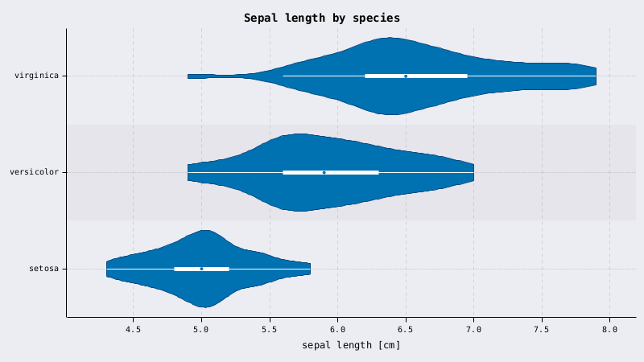
32.1.2 Ordered violins
levels/order-levels orders the levels by any statistic of a value; the result is the scale’s :domain, its first level at the bottom (y grows upward) - ascending medians put the largest on top (setosa, first in the data and at the bottom by default).
Source: R Graph Gallery - Violin plot (reorder). Data: Edgar Anderson’s iris measurements, R datasets package iris (Anderson 1935; Fisher 1936); licence: Part of R (GPL-2 | GPL-3).
(plot/render-image
{:data iris
:mapping {:x :sepal-width :y :species}
:scales {:y {:domain (levels/order-levels iris :species :sepal-width stats/median)}}
:charts [(chart/violin {:inner :quartiles})]
:labels {:title "Sepal width, species by median (largest on top)" :x "sepal width [cm]" :y :none}}
{:width 800 :height 450})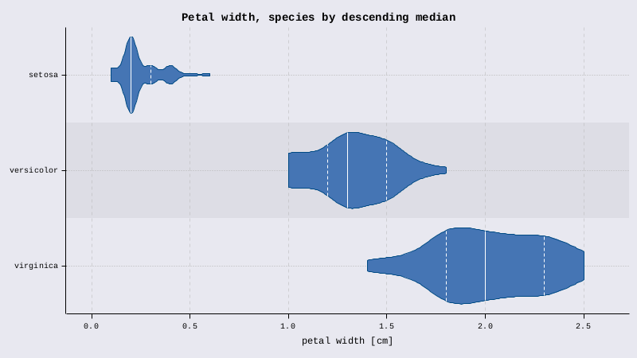
32.1.3 Horizontal and vertical
The R Graph Gallery draws violins and boxplots vertically; here that is :flip true on the same plot - values stay on :x, which is now drawn vertically.
Source: R Graph Gallery - Horizontal violin plot. Data: Edgar Anderson’s iris measurements, R datasets package iris (Anderson 1935; Fisher 1936); licence: Part of R (GPL-2 | GPL-3).
(let [p {:data iris
:mapping {:x :sepal-width :y :species}
:charts [(chart/violin)]
:labels {:x "sepal width [cm]" :y :none}}]
(plot/render-image
(plot/arrange [(assoc-in p [:labels :title] "horizontal (default)")
(-> p (assoc :flip true) (assoc-in [:labels :title] ":flip true"))]
{:columns 2})
{:width 900 :height 450}))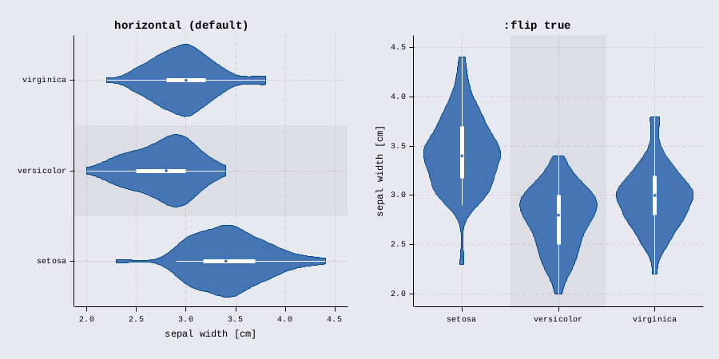
32.1.4 Violin with a box and sample sizes
Two strip charts share the bands: a violin without inner marks and a narrow box. :n-label writes each group’s count past its largest value.
Source: R Graph Gallery - Violin with boxplot and sample size. Data: Barley yields, Minnesota 1931-1932, R lattice package barley (Immer et al. 1934; Fisher 1971; Cleveland 1993); licence: GPL (>= 2) (lattice).
(plot/render-image
{:data barley
:mapping {:x :yield :y :site}
:charts [(chart/violin {:inner :none :color [200 200 220]})
(chart/box {:width 0.12 :outliers false :n-label true})]
:labels {:title "Barley yield by site" :x "yield [bushels/acre]" :y :none}}
{:width 800 :height 500})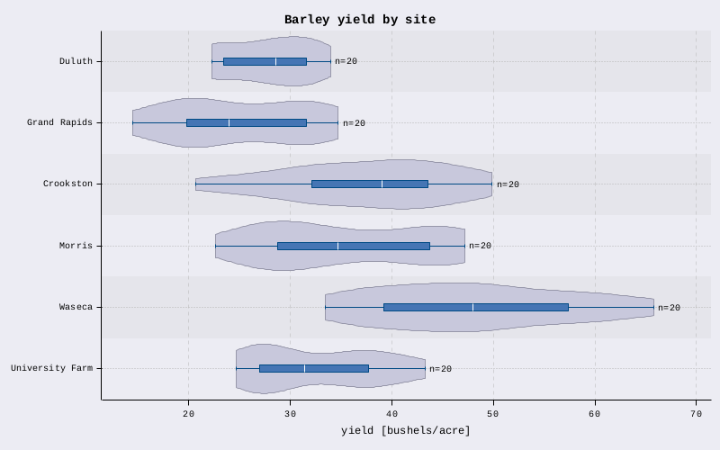
32.1.5 Grouped violins
A second grouping (here the year, coloured) dodges the violins inside each band, in legend order; with exactly two groups :position :mirror draws split violins, one half per group. The year is a number, so :scales {:color {:type :categorical}} declares it categorical: one colour per year instead of a gradient.
Source: R Graph Gallery - Grouped violin plot. Data: Barley yields, Minnesota 1931-1932, R lattice package barley (Immer et al. 1934; Fisher 1971; Cleveland 1993); licence: GPL (>= 2) (lattice).
(let [p {:data barley
:mapping {:x :yield :y :site :color :year}
:scales {:color {:type :categorical}}
:labels {:x "yield [bushels/acre]" :y :none}}]
(plot/render-image
(plot/arrange [(assoc p :charts [(chart/violin {:inner :none})] :labels {:title "dodged" :x "yield" :y :none})
(assoc p :charts [(chart/violin {:position :mirror :inner :quartiles})]
:labels {:title "split (:position :mirror)" :x "yield" :y :none})]
{:columns 2})
{:width 1000 :height 550}))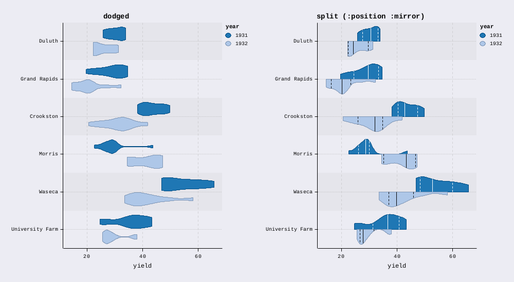
32.1.6 Inner marks
:inner chooses what a violin shows inside: a box (default), quartile lines, a rug or the points. The data is a fixed 5% sample of chem97 (31022 rows), so the rug and the points stay readable.
Source: R Graph Gallery - Violin plot; seaborn violinplot (1, 2). Data: A-level chemistry scores, England 1997, R mlmRev package Chem97 (Yang et al. 2002); licence: GPL (>= 2) (mlmRev).
(def chem97-sample
"A fixed 5% sample of chem97 (the full data has 31022 rows)."
(let [rng (r/rng :mersenne 3)] (filterv (fn [_] (< (r/drandom rng) 0.05)) chem97)))| lea | school | student | score | gender | age | gcsescore | gcsecnt |
|---|---|---|---|---|---|---|---|
| 1 | 1 | 5 | 8 | F | -1 | 6.444 | 0.15831571143033 |
| 1 | 1 | 8 | 8 | F | 4 | 6.909 | 0.62331571143033 |
| 1 | 2 | 32 | 10 | M | 2 | 6.833 | 0.54731571143033 |
| 1 | 2 | 39 | 8 | M | -5 | 6 | -0.28568428856967 |
| 2 | 5 | 52 | 8 | M | 5 | 6.25 | -0.0356842885696702 |
| 2 | 6 | 74 | 10 | F | 1 | 7.875 | 1.58931571143033 |
| 2 | 6 | 78 | 0 | F | 2 | 5.666 | -0.61968428856967 |
| 2 | 8 | 86 | 10 | F | 0 | 7.111 | 0.82531571143033 |
| 2 | 9 | 98 | 6 | M | -1 | 5.875 | -0.41068428856967 |
| 2 | 9 | 119 | 10 | M | 3 | 8 | 1.71431571143033 |
| 3 | 23 | 235 | 6 | M | -6 | 3.555 | -2.73068428856967 |
| 4 | 27 | 251 | 10 | M | -2 | 6.625 | 0.33931571143033 |
| 5 | 32 | 335 | 8 | F | -6 | 6.625 | 0.33931571143033 |
| 5 | 32 | 341 | 8 | F | -1 | 6.625 | 0.33931571143033 |
| 5 | 33 | 367 | 10 | M | 0 | 7.4 | 1.11431571143033 |
| 5 | 33 | 370 | 10 | M | 1 | 6.7 | 0.41431571143033 |
| 5 | 33 | 376 | 10 | M | 5 | 7.5 | 1.21431571143033 |
| 5 | 34 | 382 | 2 | F | -2 | 6.444 | 0.15831571143033 |
| 6 | 36 | 389 | 4 | F | -6 | 6.555 | 0.26931571143033 |
| 7 | 41 | 431 | 8 | F | -6 | 7.25 | 0.96431571143033 |
| 7 | 51 | 479 | 2 | M | -4 | 5.5 | -0.78568428856967 |
| 7 | 54 | 493 | 4 | F | 1 | 6.5 | 0.21431571143033 |
| 8 | 55 | 497 | 6 | F | -6 | 6.25 | -0.0356842885696702 |
| 9 | 57 | 509 | 2 | F | 5 | 5.444 | -0.84168428856967 |
| 9 | 61 | 535 | 2 | M | -2 | 5.375 | -0.91068428856967 |
| 9 | 61 | 539 | 8 | M | 2 | 6.875 | 0.58931571143033 |
| 9 | 62 | 557 | 6 | F | -3 | 6.444 | 0.15831571143033 |
| 9 | 63 | 565 | 0 | M | -1 | 4.285 | -2.00068428856967 |
| 9 | 65 | 590 | 10 | M | -1 | 7.222 | 0.93631571143033 |
| 10 | 67 | 621 | 8 | M | 3 | 6.916 | 0.63031571143033 |
| 10 | 67 | 626 | 10 | M | 3 | 6.916 | 0.63031571143033 |
| 10 | 67 | 642 | 10 | M | -2 | 7.583 | 1.29731571143033 |
| 10 | 68 | 651 | 10 | F | 0 | 7.5 | 1.21431571143033 |
| 11 | 75 | 708 | 4 | F | -4 | 5.125 | -1.16068428856967 |
| 12 | 77 | 731 | 8 | M | 1 | 6.125 | -0.16068428856967 |
| 12 | 77 | 740 | 2 | F | 1 | 5.625 | -0.66068428856967 |
| 12 | 78 | 745 | 10 | F | -1 | 7.25 | 0.96431571143033 |
| 12 | 86 | 801 | 4 | F | -6 | 5.555 | -0.73068428856967 |
| 13 | 88 | 819 | 8 | F | -6 | 6.5 | 0.21431571143033 |
| 13 | 88 | 828 | 4 | F | -4 | 6.444 | 0.15831571143033 |
| 13 | 90 | 840 | 8 | F | -1 | 6.125 | -0.16068428856967 |
| 13 | 94 | 849 | 8 | F | -4 | 7.5 | 1.21431571143033 |
| 13 | 97 | 882 | 8 | F | 4 | 7.555 | 1.26931571143033 |
| 13 | 97 | 898 | 10 | F | 3 | 7.777 | 1.49131571143033 |
| 14 | 100 | 927 | 4 | F | -2 | 6.875 | 0.58931571143033 |
| 14 | 104 | 943 | 4 | M | 0 | 5.625 | -0.66068428856967 |
| 15 | 110 | 969 | 4 | F | -5 | 5.888 | -0.39768428856967 |
| 15 | 110 | 970 | 4 | F | 4 | 6.333 | 0.04731571143033 |
| 15 | 111 | 1005 | 2 | M | 3 | 5.888 | -0.39768428856967 |
| 15 | 113 | 1051 | 10 | F | -1 | 7.5 | 1.21431571143033 |
| 15 | 122 | 1150 | 2 | M | 1 | 6.222 | -0.0636842885696698 |
| 15 | 124 | 1174 | 2 | M | -4 | 5.25 | -1.03568428856967 |
| 15 | 125 | 1179 | 4 | M | 4 | 6.777 | 0.49131571143033 |
| 15 | 130 | 1230 | 2 | M | -2 | 5.125 | -1.16068428856967 |
| 15 | 131 | 1244 | 8 | F | -4 | 6.555 | 0.26931571143033 |
| 15 | 132 | 1251 | 0 | M | 0 | 5.75 | -0.53568428856967 |
| 15 | 133 | 1258 | 0 | F | 3 | 6.125 | -0.16068428856967 |
| 15 | 133 | 1273 | 6 | M | -6 | 6.375 | 0.0893157114303298 |
| 16 | 135 | 1329 | 8 | F | 2 | 6.111 | -0.17468428856967 |
| 16 | 136 | 1346 | 10 | M | -3 | 7 | 0.71431571143033 |
| 16 | 136 | 1352 | 10 | F | -3 | 7.5 | 1.21431571143033 |
| 16 | 136 | 1353 | 8 | F | -5 | 6.375 | 0.0893157114303298 |
| 17 | 142 | 1388 | 2 | F | -6 | 6.222 | -0.0636842885696698 |
| 17 | 144 | 1395 | 6 | F | -3 | 6.375 | 0.0893157114303298 |
| 17 | 148 | 1441 | 0 | M | 4 | 4.25 | -2.03568428856967 |
| 17 | 152 | 1449 | 0 | F | 1 | 5.444 | -0.84168428856967 |
| 17 | 153 | 1459 | 8 | F | -5 | 4.875 | -1.41068428856967 |
| 18 | 158 | 1503 | 0 | M | -3 | 5 | -1.28568428856967 |
| 18 | 158 | 1507 | 8 | M | 4 | 7.555 | 1.26931571143033 |
| 18 | 160 | 1517 | 8 | F | 5 | 6.333 | 0.04731571143033 |
| 18 | 161 | 1538 | 0 | M | 4 | 5 | -1.28568428856967 |
| 18 | 161 | 1540 | 0 | M | -6 | 5.5 | -0.78568428856967 |
| 18 | 164 | 1554 | 8 | M | -4 | 6.625 | 0.33931571143033 |
| 18 | 164 | 1557 | 2 | F | 0 | 6.1 | -0.185684288569671 |
| 18 | 165 | 1587 | 10 | M | -6 | 7.4 | 1.11431571143033 |
| 18 | 168 | 1608 | 0 | M | 4 | 5.444 | -0.84168428856967 |
| 18 | 169 | 1612 | 6 | F | -6 | 6 | -0.28568428856967 |
| 18 | 169 | 1617 | 0 | M | 2 | 6.375 | 0.0893157114303298 |
| 18 | 169 | 1620 | 6 | F | -4 | 6.625 | 0.33931571143033 |
| 18 | 173 | 1634 | 4 | F | -6 | 5.777 | -0.50868428856967 |
| 18 | 175 | 1646 | 6 | F | -2 | 6.625 | 0.33931571143033 |
| 18 | 175 | 1649 | 4 | F | 5 | 6.888 | 0.60231571143033 |
| 18 | 176 | 1675 | 10 | M | -2 | 7.5 | 1.21431571143033 |
| 18 | 178 | 1683 | 0 | F | -5 | 5 | -1.28568428856967 |
| 18 | 178 | 1684 | 0 | F | 3 | 5.333 | -0.95268428856967 |
| 18 | 178 | 1695 | 0 | M | -3 | 5.5 | -0.78568428856967 |
| 19 | 179 | 1703 | 0 | F | 0 | 6 | -0.28568428856967 |
| 19 | 180 | 1707 | 8 | M | -4 | 6.444 | 0.15831571143033 |
| 19 | 181 | 1709 | 0 | F | -6 | 5.4 | -0.88568428856967 |
| 19 | 181 | 1714 | 4 | F | 4 | 7 | 0.71431571143033 |
| 19 | 185 | 1754 | 4 | M | -3 | 5.545 | -0.74068428856967 |
| 19 | 186 | 1794 | 8 | M | 3 | 6.272 | -0.01368428856967 |
| 19 | 186 | 1799 | 10 | M | 4 | 6.909 | 0.62331571143033 |
| 19 | 187 | 1812 | 6 | F | -1 | 6.555 | 0.26931571143033 |
| 19 | 188 | 1830 | 10 | F | 1 | 7.4 | 1.11431571143033 |
| 19 | 193 | 1888 | 8 | M | -5 | 6.25 | -0.0356842885696702 |
| 19 | 193 | 1891 | 0 | F | 5 | 5.125 | -1.16068428856967 |
| 19 | 193 | 1909 | 6 | M | -3 | 4.636 | -1.64968428856967 |
| 19 | 193 | 1912 | 8 | M | -2 | 5.8 | -0.48568428856967 |
| 20 | 197 | 1950 | 0 | M | -3 | 3.888 | -2.39768428856967 |
| … | … | … | … | … | … | … | … |
(plot/render-image
(plot/arrange (for [inner [:box :quartiles :rug :points]]
{:data chem97-sample
:mapping {:x :gcsescore :y :score}
:scales {:y {:type :categorical}}
:charts [(chart/violin {:inner inner})]
:labels {:title (str ":inner " inner) :x "GCSE score"}})
{:columns 2})
{:width 1000 :height 800})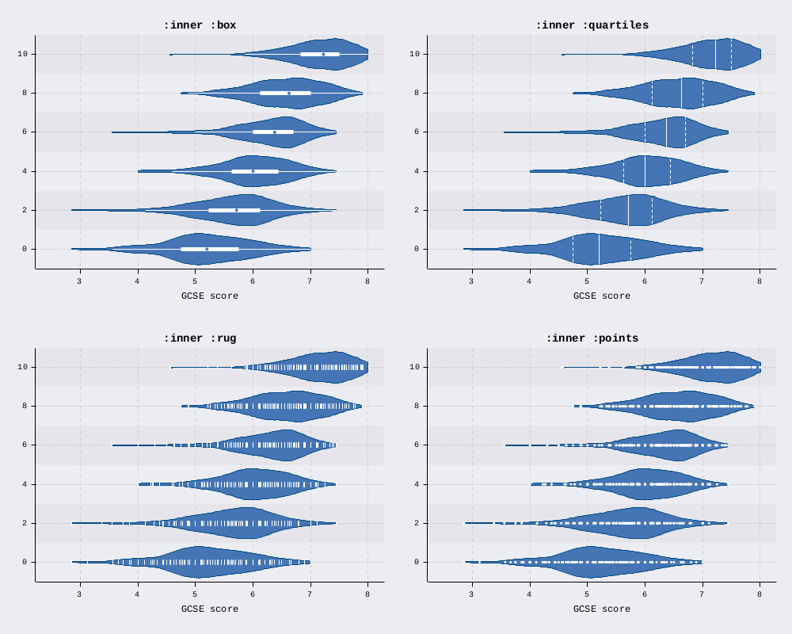
32.2 Density
A kernel density estimate (fastmath) of the values, per panel and group.
32.2.1 Basic density
:bandwidth is a number or a fastmath rule (:nrd0 by default, as R); :kernel any fastmath kernel.
Source: R Graph Gallery - Density plot. Data: Old Faithful geyser eruptions, R datasets package faithful (Härdle 1991; Azzalini & Bowman 1990); licence: Part of R (GPL-2 | GPL-3).
(plot/render-image
(plot/arrange (for [[title opts] [["default (:nrd0)" {}]
[":bandwidth 0.1" {:bandwidth 0.1}]
[":bandwidth 0.6" {:bandwidth 0.6}]
[":kernel :epanechnikov" {:kernel :epanechnikov}]]]
{:data faithful
:mapping {:x :eruptions}
:charts [(chart/density (assoc opts :fill [0 114 178 60]))]
:labels {:title title :x "eruption time [min]"}})
{:columns 2})
{:width 900 :height 600})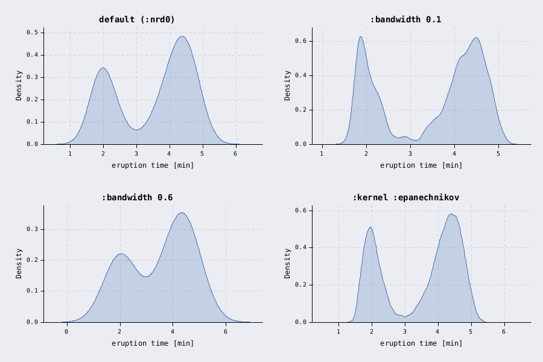
32.2.2 Mirror density
Two groups, the second drawn downward, with the y = 0 line (:zero-line, on by default). :symmetric puts both halves on one range so they compare by height.
Source: R Graph Gallery - Mirror density chart. Data: A-level chemistry scores, England 1997, R mlmRev package Chem97 (Yang et al. 2002); licence: GPL (>= 2) (mlmRev).
(plot/render-image
(plot/arrange [{:data chem97
:mapping {:x :gcsescore :color :gender}
:charts [(chart/density {:position :mirror :fill :color})]
:labels {:title "GCSE score: F up, M down" :x "GCSE score"}}
{:data chem97
:mapping {:x :age :color :gender}
:charts [(chart/density {:position :mirror :symmetric true})]
:labels {:title "age, :symmetric" :x "age [months, centred]"}}]
{:columns 2})
{:width 1000 :height 450})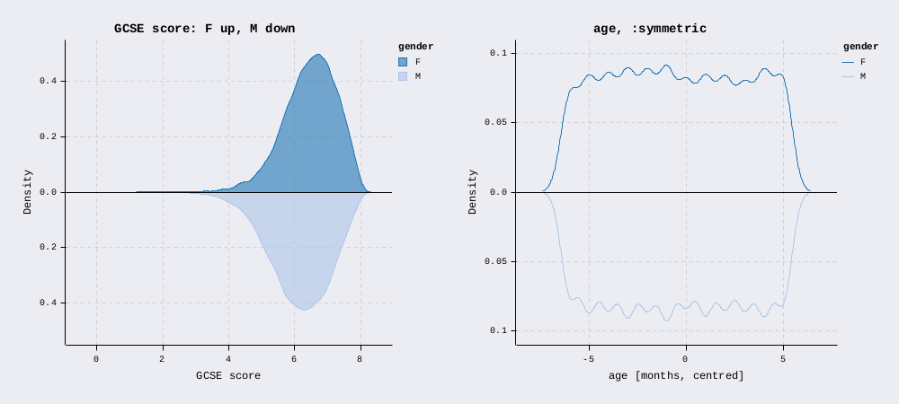
32.2.3 Several groups
Groups from a colour mapping, overlaid. The line takes the group colour; :fill :color fills each area with its group colour at opacity :alpha, a fixed :fill colour fills every area alike.
Source: R Graph Gallery - Density with multiple groups. Data: Edgar Anderson’s iris measurements, R datasets package iris (Anderson 1935; Fisher 1936); licence: Part of R (GPL-2 | GPL-3).
(plot/render-image
(plot/arrange [{:data iris
:mapping {:x :sepal-length :color :species}
:charts [(chart/density {:line-width 2})]
:labels {:title "lines" :x "sepal length [cm]"}}
{:data iris
:mapping {:x :sepal-length :color :species}
:charts [(chart/density {:fill :color :alpha 0.4})]
:labels {:title ":fill :color, :alpha 0.4" :x "sepal length [cm]"}}
{:data iris
:mapping {:x :petal-length :color :species}
:charts [(chart/density {:fill [0 0 0 30]})]
:labels {:title ":fill [0 0 0 30]" :x "petal length [cm]"}}]
{:columns 3})
{:width 1000 :height 400})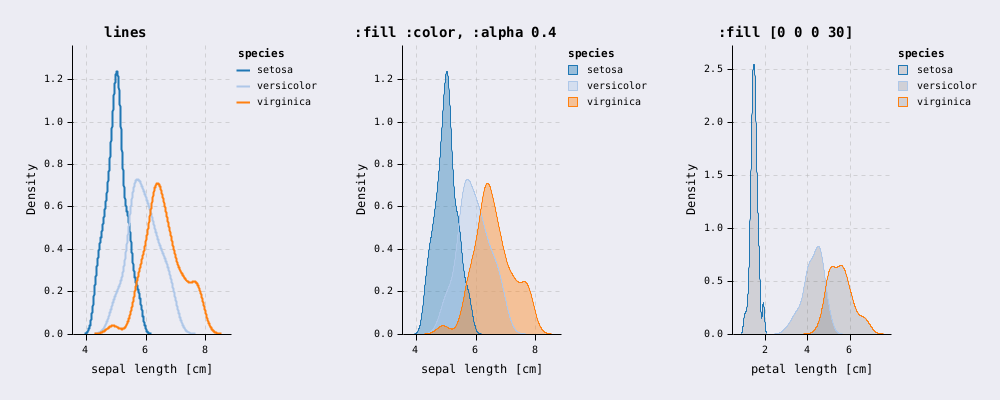
32.2.4 Annotated density
Annotation charts take literal positions: a rule at the mean, a text label and a band (chart/rect) over the central 50% of the values.
Source: R Graph Gallery - Density chart with annotation. Data: Old Faithful geyser eruptions, R datasets package faithful (Härdle 1991; Azzalini & Bowman 1990); licence: Part of R (GPL-2 | GPL-3).
(let [xs (map :eruptions faithful)
mean (stats/mean xs)
[q1 q3] (stats/quantiles xs [0.25 0.75])]
(plot/render-image
{:data faithful
:mapping {:x :eruptions}
:charts [(chart/rect {:x [q1 q3] :fill [0 114 178 40]})
(chart/density)
(chart/rule {:x mean :dash [5.0 3.0] :color :red})
(chart/text {:x mean :y [:panel 0.95] :text (format "mean %.2f" mean) :anchor [:left :top]
:offset [4 0] :color :red})
(chart/text {:x (* 0.5 (+ q1 q3)) :y [:panel 0.05] :text "IQR" :anchor [:center :bottom]})]
:labels {:title "Old Faithful eruption times" :x "eruption time [min]"}}
{:width 800 :height 450}))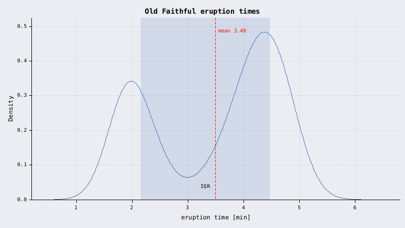
32.2.5 Small multiples
A facet mapping gives one panel per level; the colour still groups inside each panel.
Source: R Graph Gallery - Density small multiples. Data: A-level chemistry scores, England 1997, R mlmRev package Chem97 (Yang et al. 2002); licence: GPL (>= 2) (mlmRev).
(plot/render-image
{:data chem97
:mapping {:x :gcsescore :facet :score :color :gender}
:charts [(chart/density)]
:labels {:title "GCSE score by A-level score and gender" :x "GCSE score"}}
{:width 900 :height 600})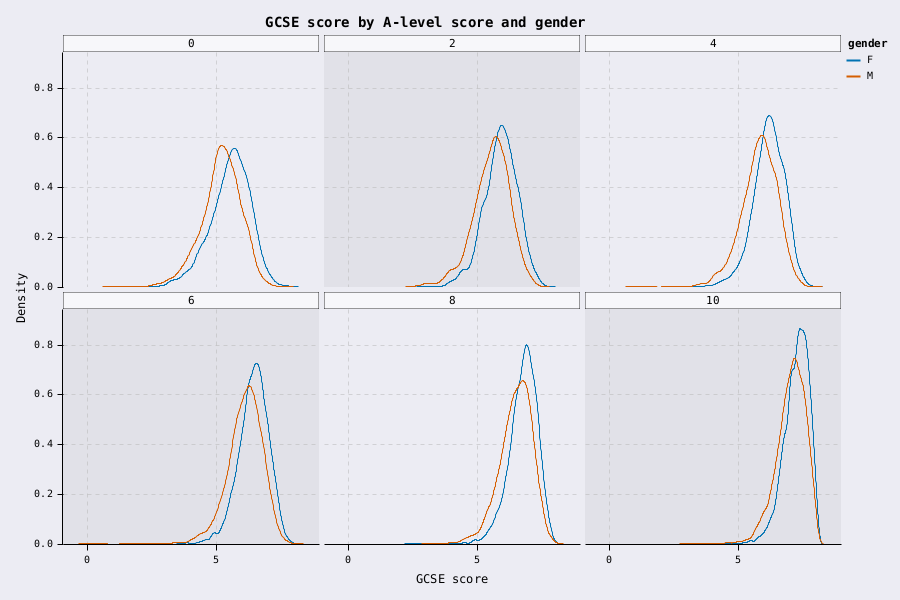
32.2.6 Stacked density
:position :stack piles the group densities on one common grid; :normalize shows each group’s share.
Source: R Graph Gallery - Stacked density chart. Data: Prices and attributes of round cut diamonds, R ggplot2 package diamonds (Wickham et al.); licence: MIT (ggplot2).
(let [p {:data diamonds
:mapping {:x :price :color :cut}
:scales {:color {:domain ["Fair" "Good" "Very Good" "Premium" "Ideal"]}}}]
(plot/render-image
(plot/arrange [(assoc p :charts [(chart/density {:position :stack})] :labels {:title ":stack" :x "price [USD]"})
(assoc p :charts [(chart/density {:position :normalize})] :labels {:title ":normalize" :x "price [USD]"})]
{:columns 2})
{:width 1000 :height 450}))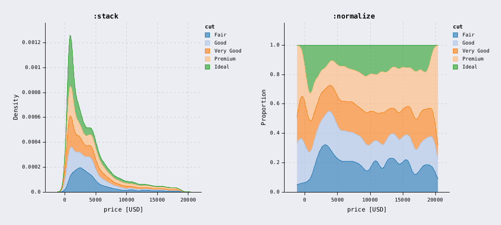
32.2.7 Marginal density
:margins adds charts beside the panel: the top margin shares the horizontal axis, the right margin the vertical one. Margin charts read the plot’s data and colour mapping, with :x mapped to the shared dimension for them; they have no axes of their own, so the scatter keeps the only x and y axes.
Source: R Graph Gallery - Marginal distribution. Data: Edgar Anderson’s iris measurements, R datasets package iris (Anderson 1935; Fisher 1936); licence: Part of R (GPL-2 | GPL-3).
(plot/render-image
{:data iris
:mapping {:x :sepal-length :y :sepal-width :color :species}
:charts [(chart/scatter)]
:margins {:top (chart/density {:fill :color :alpha 0.4})
:right (chart/density {:fill :color :alpha 0.4})}
:labels {:title "Iris sepals with marginal densities" :x "sepal length [cm]" :y "sepal width [cm]"}}
{:width 750 :height 650})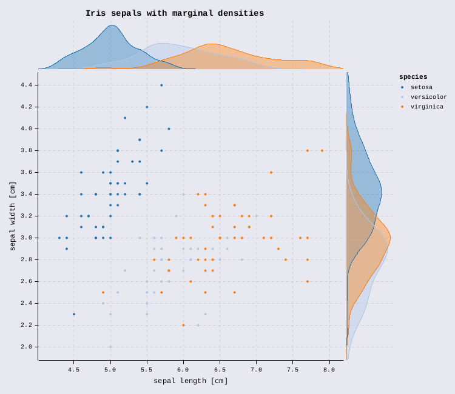
32.3 Histogram
Counts of the values in bins shared by all panels and groups.
32.3.1 Basic histogram
:y chooses the bar height: percent of the total (default), count, density (area 1) or probability.
Source: R Graph Gallery - Histogram. Data: Old Faithful geyser eruptions, R datasets package faithful (Härdle 1991; Azzalini & Bowman 1990); licence: Part of R (GPL-2 | GPL-3).
(plot/render-image
(plot/arrange (for [y [:percent :count :density :pmf]]
{:data faithful
:mapping {:x :waiting}
:charts [(chart/histogram {:y y})]
:labels {:title (str ":y " y) :x "waiting [min]"}})
{:columns 2})
{:width 900 :height 600})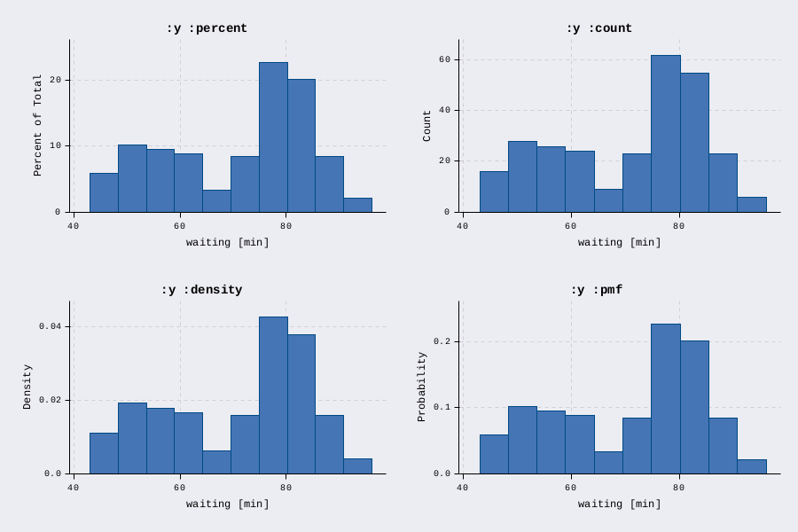
32.3.2 Bin size
:bins takes a fastmath estimation rule, a number of equal bins or explicit breaks.
Source: R Graph Gallery - Histogram bin size. Data: Old Faithful geyser eruptions, R datasets package faithful (Härdle 1991; Azzalini & Bowman 1990); licence: Part of R (GPL-2 | GPL-3).
(plot/render-image
(plot/arrange (for [bins [:sturges 5 40 [1.5 2.5 3.5 4 4.5 5.5]]]
{:data faithful
:mapping {:x :eruptions}
:charts [(chart/histogram {:bins bins})]
:labels {:title (str ":bins " bins) :x "eruption time [min]"}})
{:columns 2})
{:width 900 :height 600})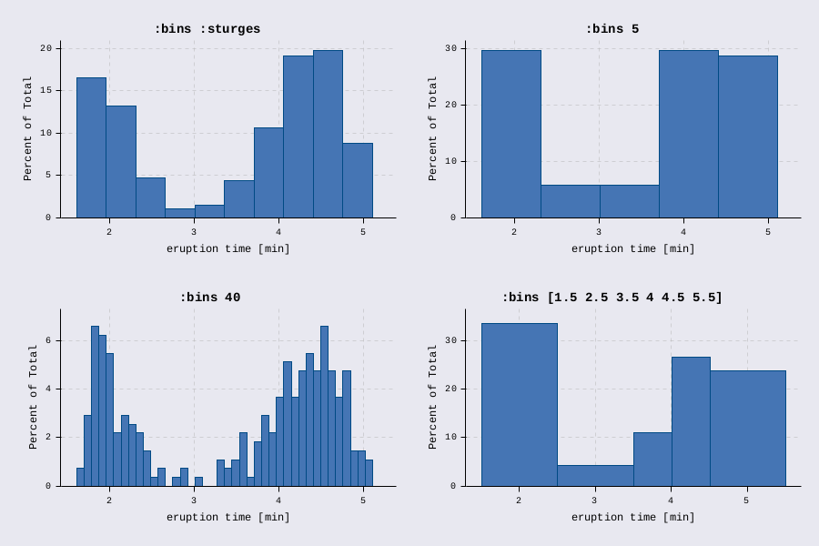
32.3.3 Mirror histogram
Two groups back to back. Bars are filled by the group colour and outlined by :stroke-color - a colour, :none or :darker (the darkened fill, default); :symmetric gives both halves one range.
Source: R Graph Gallery - Mirror histogram. Data: A-level chemistry scores, England 1997, R mlmRev package Chem97 (Yang et al. 2002); licence: GPL (>= 2) (mlmRev).
(plot/render-image
(plot/arrange [{:data chem97 :mapping {:x :gcsescore :color :gender}
:charts [(chart/histogram {:position :mirror :bins 30})]
:labels {:title "default outline" :x "GCSE score"}}
{:data chem97 :mapping {:x :gcsescore :color :gender}
:charts [(chart/histogram {:position :mirror :bins 30 :stroke-color :white :symmetric true})]
:labels {:title "white outline, :symmetric" :x "GCSE score"}}]
{:columns 2})
{:width 1000 :height 450})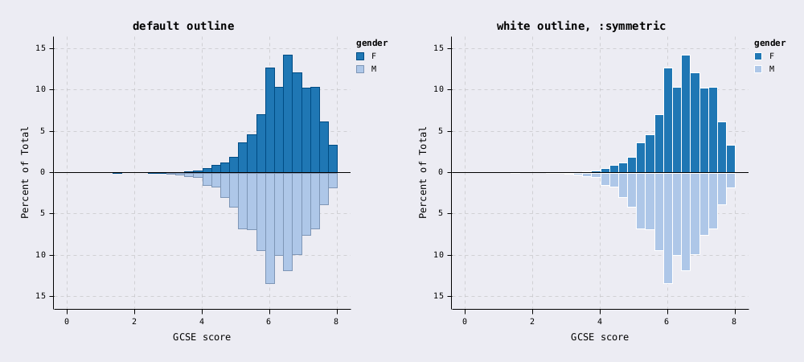
32.3.4 Groups on one axis
:position places the groups’ bars: over each other (translucent), side by side, stacked or normalized.
Source: R Graph Gallery - Histogram with several groups. Data: Edgar Anderson’s iris measurements, R datasets package iris (Anderson 1935; Fisher 1936); licence: Part of R (GPL-2 | GPL-3).
(plot/render-image
(plot/arrange (for [position [:overlay :dodge :stack :normalize]]
{:data iris
:mapping {:x :sepal-length :color :species}
:charts [(chart/histogram {:position position :bins 15})]
:labels {:title (str ":position " position) :x "sepal length [cm]"}})
{:columns 2})
{:width 1000 :height 650})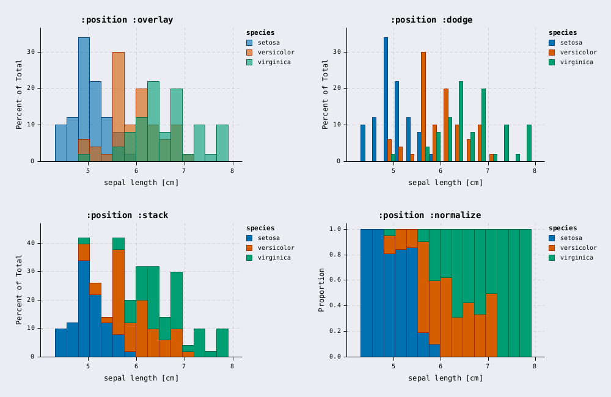
32.3.5 Small multiples
Source: R Graph Gallery - Histogram small multiples. Data: Prices and attributes of round cut diamonds, R ggplot2 package diamonds (Wickham et al.); licence: MIT (ggplot2).
(plot/render-image
{:data diamonds
:mapping {:x :price :facet :cut}
:scales {:facet {:domain ["Fair" "Good" "Very Good" "Premium" "Ideal"]}}
:charts [(chart/histogram {:bins 30})]
:labels {:title "Diamond prices by cut" :x "price [USD]"}}
{:width 900 :height 600})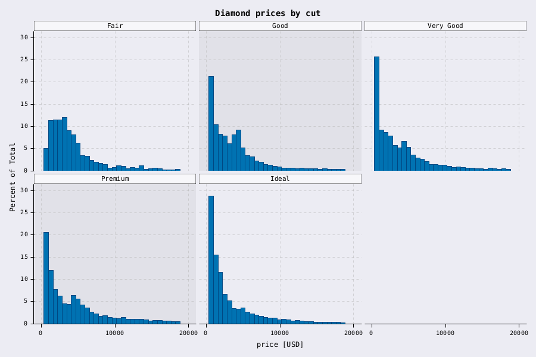
32.3.6 Marginal histogram
A margin may hold several charts, :size sets its thickness in pixels and :axis true shows the magnitude (count, density) of a histogram or density margin; strips (boxes, rugs, …) work in margins too.
Source: R Graph Gallery - Marginal histogram. Data: Edgar Anderson’s iris measurements, R datasets package iris (Anderson 1935; Fisher 1936); licence: Part of R (GPL-2 | GPL-3).
(plot/render-image
{:data iris
:mapping {:x :petal-length :y :petal-width :color :species}
:charts [(chart/scatter)]
:margins {:top {:charts (chart/histogram {:bins 25 :position :stack :y :count}) :axis true}
:right {:charts [(chart/box {:outliers false}) (chart/rug)] :size 70}}
:labels {:title "Iris petals: stacked histogram on top, boxes and a rug on the right"
:x "petal length [cm]" :y "petal width [cm]"}}
{:width 750 :height 650})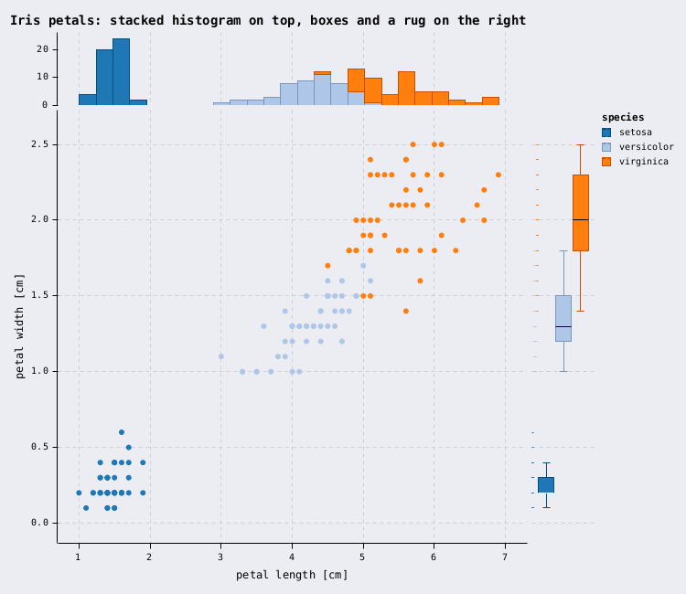
32.3.7 Strips on a histogram
Any strip chart (box, violin, rug, stripplot, beeswarm, extent) layers on a histogram or density: {:at v} centres it on y = v; :place :bottom draws it below y = 0 in room the chart asks for.
Source: R Graph Gallery - Histogram with boxplot on top; lattice Fig 3.1 (1, 2). Data: Old Faithful geyser eruptions, R datasets package faithful (Härdle 1991; Azzalini & Bowman 1990); licence: Part of R (GPL-2 | GPL-3).
(plot/render-image
(plot/arrange [{:data faithful :mapping {:x :eruptions}
:charts [(chart/histogram {:bins 20}) (chart/box {:place {:at 14.5} :thickness 16})]
:labels {:title "box above ({:at 14.5})" :x "eruption time [min]"}}
{:data faithful :mapping {:x :eruptions}
:charts [(chart/density) (chart/rug {:place :bottom :width 1.0})]
:labels {:title "rug below (:bottom)" :x "eruption time [min]"}}
{:data faithful :mapping {:x :eruptions}
:charts [(chart/density) (chart/stripplot {:place :bottom :rng (r/rng :mersenne 2) :size 6})]
:labels {:title "jittered points below" :x "eruption time [min]"}}
{:data faithful :mapping {:x :eruptions}
:charts [(chart/histogram {:bins 20}) (chart/beeswarm {:place :bottom :size 4 :bottom-share 0.3})]
:labels {:title "beeswarm below" :x "eruption time [min]"}}]
{:columns 2})
{:width 1000 :height 700})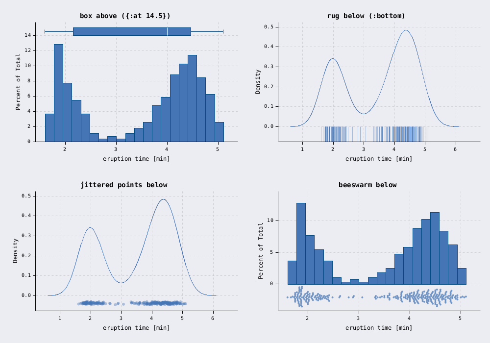
32.4 Boxplot
A Tukey box per group: quartiles, whiskers to the most extreme values within 1.5 IQR, outliers beyond.
32.4.1 Basic boxplot
Source: R Graph Gallery - Boxplot. Data: Motor Trend car road tests (1974), R datasets package mtcars (Henderson & Velleman 1981); licence: Part of R (GPL-2 | GPL-3).
(plot/render-image
{:data mtcars
:mapping {:x :mpg :y :cyl}
:scales {:y {:type :categorical}}
:charts [(chart/box)]
:labels {:title "Fuel economy by number of cylinders" :x "miles per gallon" :y "cylinders"}}
{:width 800 :height 400})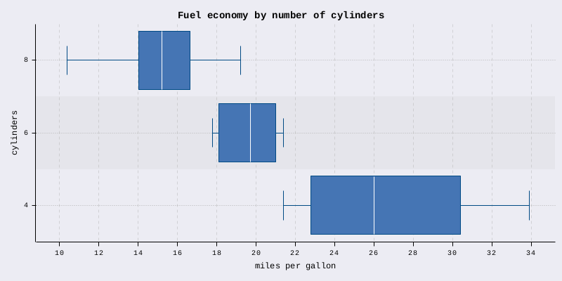
The cylinder count is a number, so it is declared categorical - one band per value instead of a numeric axis - with :scales {:y {:type :categorical}}; strings and keywords are categorical by themselves.
32.4.2 Boxplot with jittered points
Source: R Graph Gallery - Boxplot with jitter. Data: Motor Trend car road tests (1974), R datasets package mtcars (Henderson & Velleman 1981); licence: Part of R (GPL-2 | GPL-3).
(plot/render-image
{:data mtcars
:mapping {:x :mpg :y :cyl}
:scales {:y {:type :categorical}}
:charts [(chart/box {:outliers false :color [210 210 225]})
(chart/stripplot {:rng (r/rng :mersenne 7) :jitter 0.2 :size 8 :color [215 48 39 160]})]
:labels {:title "Box with every car" :x "miles per gallon" :y "cylinders"}}
{:width 800 :height 400})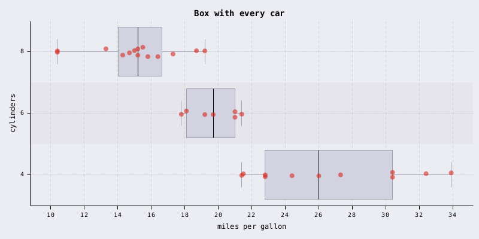
32.4.3 Group order
The band scale’s :order-by orders the levels by a function of each level’s rows, from the bottom up; :descending true reverses it.
Source: R Graph Gallery - Reorder boxplot. Data: Barley yields, Minnesota 1931-1932, R lattice package barley (Immer et al. 1934; Fisher 1971; Cleveland 1993); licence: GPL (>= 2) (lattice).
(plot/render-image
(plot/arrange [{:data barley :mapping {:x :yield :y :variety}
:scales {:y {:order-by #(stats/median (map :yield %))}}
:charts [(chart/box)]
:labels {:title "by median (largest on top)" :x "yield" :y :none}}
{:data barley :mapping {:x :yield :y :variety}
:scales {:y {:order-by #(stats/mean (map :yield %)) :descending true}}
:charts [(chart/box)]
:labels {:title "by mean, :descending (largest at the bottom)" :x "yield" :y :none}}]
{:columns 2})
{:width 1000 :height 500})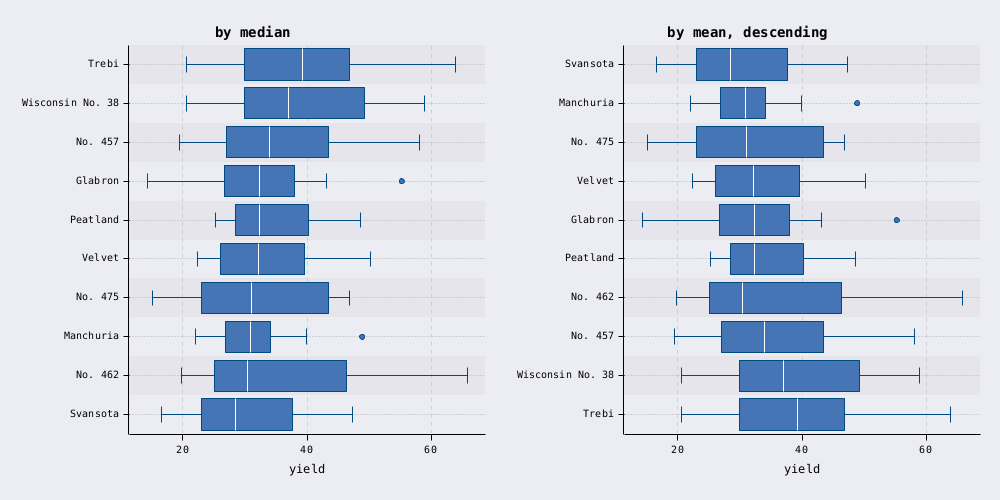
32.4.4 Highlight a group
A derived column and an explicit colour scale: grey for the rest, red for the group in focus. Each band holds one colour group, so every box stays on its band’s centre line.
Source: R Graph Gallery - Highlight a group in boxplot. Data: Motor Trend car road tests (1974), R datasets package mtcars (Henderson & Velleman 1981); licence: Part of R (GPL-2 | GPL-3).
(plot/render-image
{:data (map #(assoc % :focus (if (= 6 (:cyl %)) "6 cylinders" "other")) mtcars)
:mapping {:x :hp :y :cyl :color :focus}
:scales {:y {:type :categorical}
:color {:domain ["other" "6 cylinders"] :range [[190 190 190] [215 48 39]]}}
:charts [(chart/box)]
:labels {:title "Horse power, 6 cylinders highlighted" :x "horse power" :y "cylinders"}}
{:width 800 :height 400})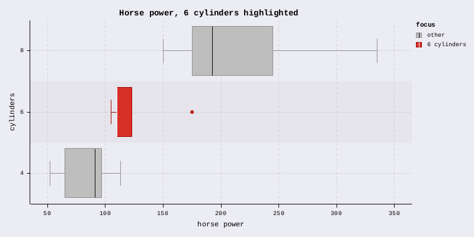
32.4.5 Grouped boxplot
Source: R Graph Gallery - Grouped boxplot. Data: Barley yields, Minnesota 1931-1932, R lattice package barley (Immer et al. 1934; Fisher 1971; Cleveland 1993); licence: GPL (>= 2) (lattice).
(plot/render-image
{:data barley
:mapping {:x :yield :y :site :color :year}
:scales {:color {:type :categorical}}
:charts [(chart/box)]
:labels {:title "Barley yield by site and year" :x "yield [bushels/acre]" :y :none}}
{:width 800 :height 500})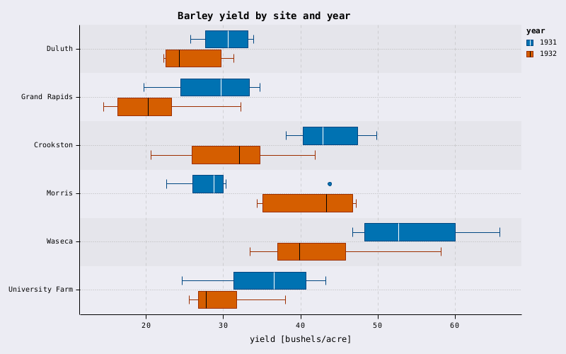
32.4.6 Faceted boxplot
Source: R Graph Gallery - Boxplot small multiples. Data: Barley yields, Minnesota 1931-1932, R lattice package barley (Immer et al. 1934; Fisher 1971; Cleveland 1993); licence: GPL (>= 2) (lattice).
(plot/render-image
{:data barley
:mapping {:x :yield :y :year :facet :site}
:scales {:y {:type :categorical}}
:charts [(chart/box)]
:labels {:title "Yield by year, one panel per site" :x "yield" :y :none}}
{:width 900 :height 500})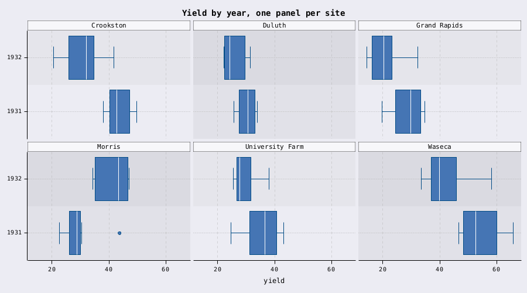
32.4.7 Variable width
:varwidth makes each box’s width proportional to the square root of its count.
Source: R Graph Gallery - Boxplot with variable width. Data: A-level chemistry scores, England 1997, R mlmRev package Chem97 (Yang et al. 2002); licence: GPL (>= 2) (mlmRev).
(plot/render-image
{:data chem97
:mapping {:x :gcsescore :y :score}
:scales {:y {:type :categorical}}
:charts [(chart/box {:varwidth true :n-label true})]
:labels {:title "GCSE score by A-level score" :x "GCSE score" :y "A-level score"}}
{:width 800 :height 550})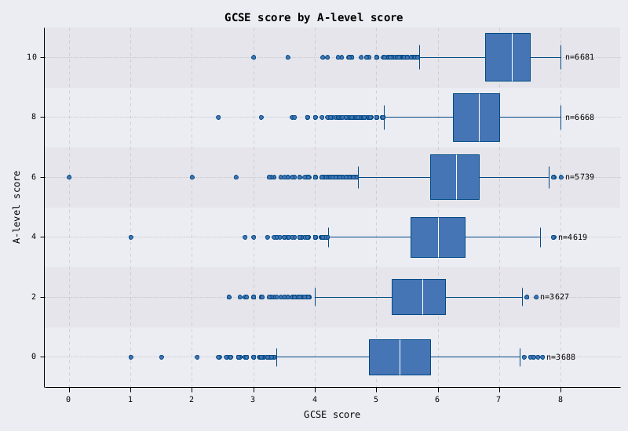
32.4.8 Binned continuous variable
levels/bin cuts a numeric column into half-open interval bins; the bins are ordered levels for the boxes.
Source: R Graph Gallery - Boxplot from continuous variable. Data: Prices and attributes of round cut diamonds, R ggplot2 package diamonds (Wickham et al.); licence: MIT (ggplot2).
(plot/render-image
{:data (levels/bin diamonds :carat {:as :carat-bin :bins [0 0.5 1 1.5 2 2.5 5.01]})
:mapping {:x :price :y :carat-bin}
:charts [(chart/box {:outliers false :n-label true})]
:labels {:title "Diamond price by carat" :x "price [USD]" :y "carat"}}
{:width 800 :height 500})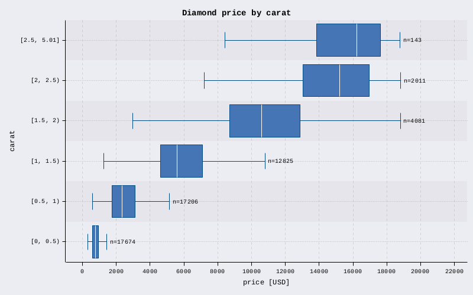
32.4.9 Mean marker
The categorical declaration can also sit on the mapping: (levels/categorical :gear) reads :gear as usual and makes its dimension categorical, here instead of a :scales entry.
Source: R Graph Gallery - Boxplot with mean. Data: Motor Trend car road tests (1974), R datasets package mtcars (Henderson & Velleman 1981); licence: Part of R (GPL-2 | GPL-3).
(plot/render-image
{:data mtcars
:mapping {:x :qsec :y (levels/categorical :gear)}
:charts [(chart/box {:mean true})]
:labels {:title "Quarter mile time by gears, mean marked" :x "quarter mile [s]" :y "gears"}}
{:width 800 :height 400})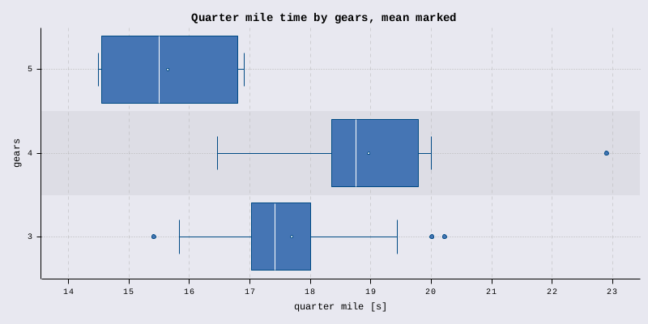
32.4.10 Sample size
:n-label with :n-format (a format string for the count).
Source: R Graph Gallery - Boxplot with sample size. Data: Barley yields, Minnesota 1931-1932, R lattice package barley (Immer et al. 1934; Fisher 1971; Cleveland 1993); licence: GPL (>= 2) (lattice).
(plot/render-image
{:data barley
:mapping {:x :yield :y :variety :color :year}
:scales {:color {:type :categorical}}
:charts [(chart/box {:n-label true :n-format "%d obs"})]
:labels {:title "Yield by variety and year" :x "yield" :y :none}}
{:width 900 :height 650})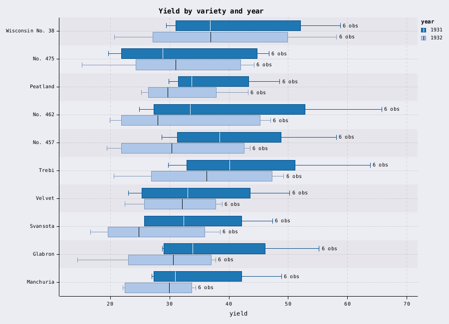
32.4.11 Horizontal and vertical
Source: R Graph Gallery - Horizontal boxplot. Data: Motor Trend car road tests (1974), R datasets package mtcars (Henderson & Velleman 1981); licence: Part of R (GPL-2 | GPL-3).
(let [p {:data mtcars :mapping {:x :wt :y :am} :scales {:y {:type :categorical}} :charts [(chart/box)]
:labels {:x "weight [1000 lbs]" :y "manual transmission"}}]
(plot/render-image
(plot/arrange [(assoc-in p [:labels :title] "horizontal")
(-> p (assoc :flip true) (assoc-in [:labels :title] ":flip true"))]
{:columns 2})
{:width 900 :height 400}))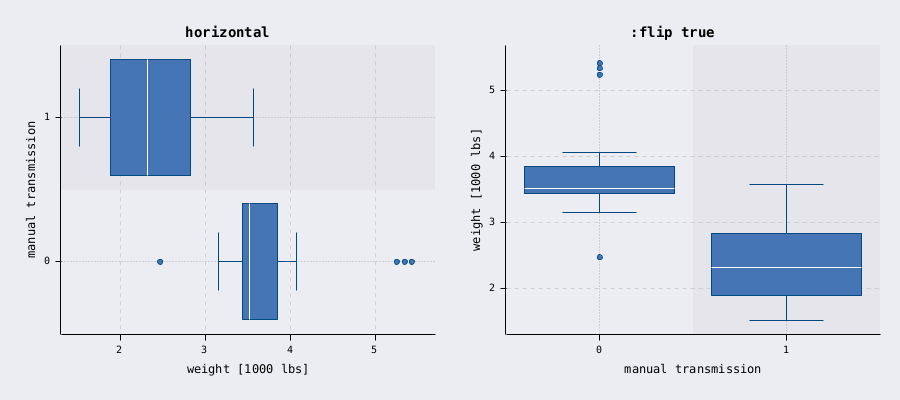
32.4.12 Intervals
chart/extent draws an interval per group from fastmath.stats: here the 95% confidence interval of the mean, mean ± standard deviation and a bootstrap percentile interval.
Source: seaborn - pointplot (confidence intervals); cljplot - extents (1, 2). Data: Barley yields, Minnesota 1931-1932, R lattice package barley (Immer et al. 1934; Fisher 1971; Cleveland 1993); licence: GPL (>= 2) (lattice).
(plot/render-image
(plot/arrange (for [[title opts] [[":ci" {:method :ci}]
[":stddev" {:method :stddev}]
[":bootstrap-percentile" {:method :bootstrap-percentile :rng (r/rng :mersenne 1)}]]]
{:data barley :mapping {:x :yield :y :site}
:charts [(chart/extent opts)]
:labels {:title title :x "yield" :y :none}})
{:columns 3})
{:width 1000 :height 400})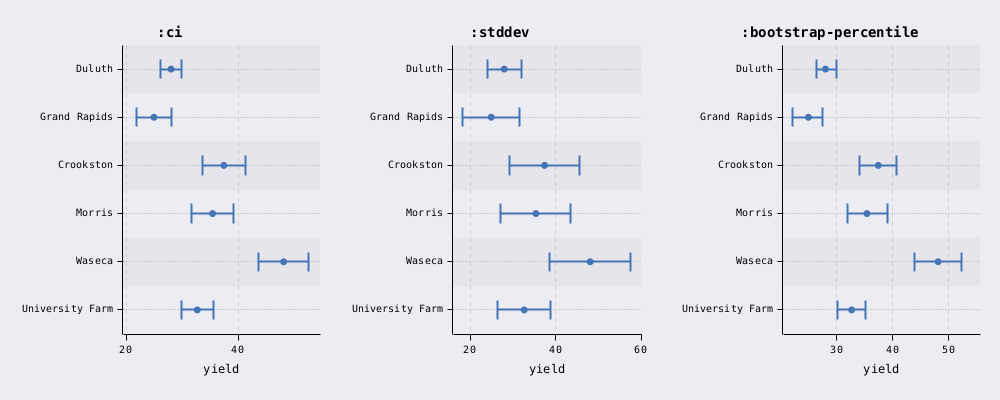
32.5 Ridgeline
Histograms and densities with a categorical :y become ridgelines: one profile per level, growing toward the next level, all on one height scale (:overlap - the tallest profile in band steps).
32.5.1 Basic ridgeline
(def months ["January" "February" "March" "April" "May" "June" "July" "August" "September" "October" "November"
"December"])Source: R Graph Gallery - Ridgeline chart. Data: Weather in Lincoln, Nebraska, 2016, R ggridges package lincoln_weather (Weather Underground, via Wilke); licence: GPL-2 (ggridges).
(plot/render-image
{:data lincoln
:mapping {:x :mean-temp :y :month}
:scales {:y {:domain months :reverse true}}
:charts [(chart/density {:overlap 1.5})]
:labels {:title "Mean temperature in Lincoln, 2016" :x "mean temperature [F]" :y :none}}
{:width 800 :height 650})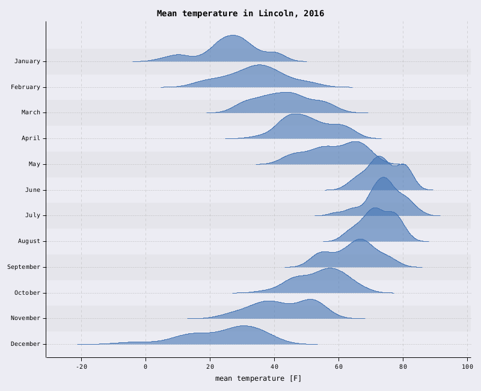
32.5.2 Ridge shapes
Histograms make ridgelines too; any strip chart can share the bands.
Source: R Graph Gallery - Ridgeline chart. Data: Prices and attributes of round cut diamonds, R ggplot2 package diamonds (Wickham et al.); licence: MIT (ggplot2).
(let [p {:data diamonds
:mapping {:x :price :y :cut}
:scales {:y {:domain ["Fair" "Good" "Very Good" "Premium" "Ideal"]}}}]
(plot/render-image
(plot/arrange [(assoc p :charts [(chart/histogram {:bins 40})] :labels {:title "histogram ridges" :x "price" :y :none})
(assoc p :data (take-nth 25 diamonds)
:charts [(chart/density {:overlap 0.7}) (chart/stripplot {:rng (r/rng :mersenne 4) :size 3 :jitter 0.2})]
:labels {:title "density ridges with points (4% sample)" :x "price" :y :none})]
{:columns 2})
{:width 1000 :height 550}))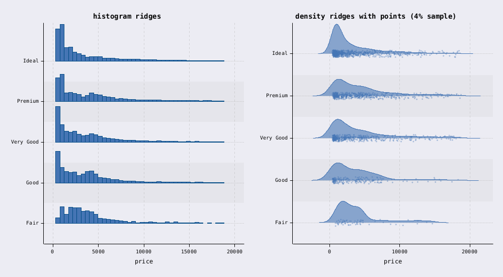
32.5.3 Gradient fill
:fill-gradient colours the area along :x with a clojure2d gradient.
Source: R Graph Gallery - Ridgeline with gradient. Data: Weather in Lincoln, Nebraska, 2016, R ggridges package lincoln_weather (Weather Underground, via Wilke); licence: GPL-2 (ggridges).
(plot/render-image
{:data lincoln
:mapping {:x :max-temp :y :month}
:scales {:y {:domain months :reverse true}}
:charts [(chart/density {:overlap 1.5 :fill-gradient :mpl/plasma})]
:labels {:title "Daily maximum temperature" :x "max temperature [F]" :y :none}}
{:width 800 :height 650})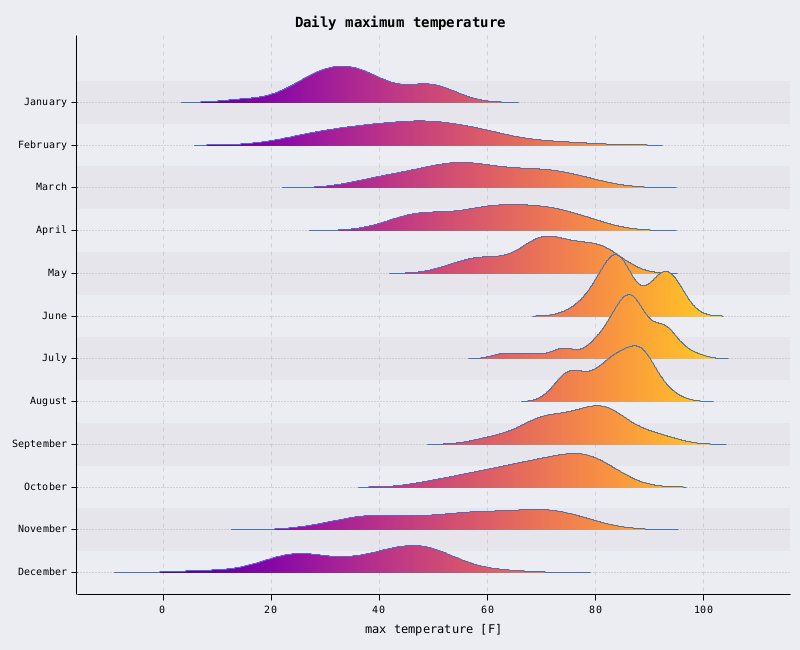
32.5.4 Double ridgeline
With two groups, :position :mirror grows the second group away from the next level.
Source: R Graph Gallery - Ridgeline (two groups). Data: A-level chemistry scores, England 1997, R mlmRev package Chem97 (Yang et al. 2002); licence: GPL (>= 2) (mlmRev).
(plot/render-image
{:data chem97
:mapping {:x :gcsescore :y :score :color :gender}
:scales {:y {:type :categorical}}
:charts [(chart/density {:position :mirror :overlap 0.45})]
:labels {:title "GCSE score: F up, M down, by A-level score" :x "GCSE score" :y "A-level score"}}
{:width 800 :height 650})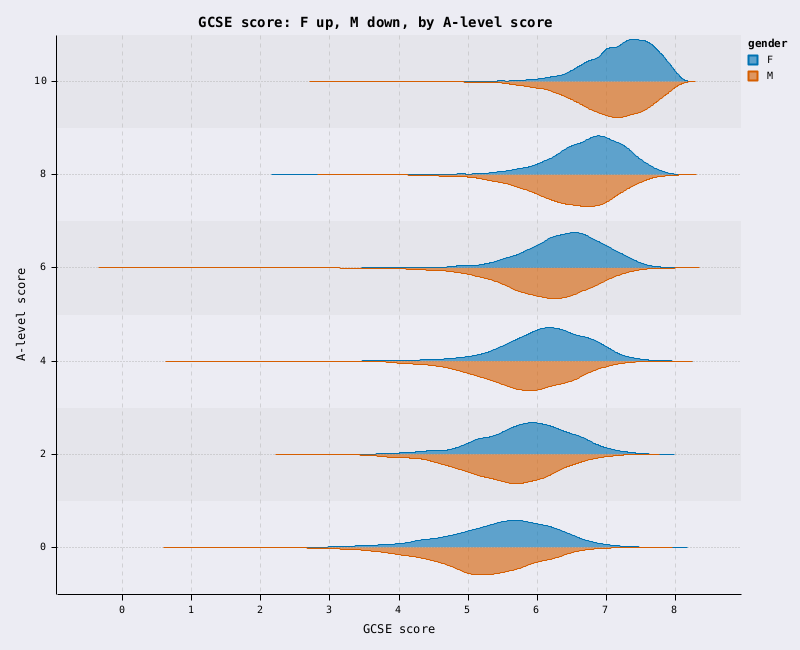
32.6 Beeswarm
Points packed across their band so none overlap (:fit squeezes a swarm that is too wide into its band). A colour mapping makes groups - here each species is alone in its band, so the swarm stays centred - and the box opts out of the colour with :mapping {:color nil}.
Source: R Graph Gallery - Beeswarm (1, 2, 3). Data: Edgar Anderson’s iris measurements, R datasets package iris (Anderson 1935; Fisher 1936); licence: Part of R (GPL-2 | GPL-3).
(plot/render-image
(plot/arrange [{:data iris :mapping {:x :sepal-length :y :species}
:charts [(chart/beeswarm {:size 6})]
:labels {:title "basic" :x "sepal length" :y :none}}
{:data iris :mapping {:x :sepal-length :y :species} :flip true
:charts [(chart/beeswarm {:size 6})]
:labels {:title "vertical (:flip)" :x "sepal length" :y :none}}
{:data mtcars :mapping {:x :mpg :y :cyl} :scales {:y {:type :categorical}}
:charts [(chart/beeswarm {:size 12 :shape \A :color [215 48 39 200]})]
:labels {:title "dot style (:shape, :size)" :x "mpg" :y "cylinders"}}
{:data iris :mapping {:x :petal-length :y :species :color :species}
:charts [(chart/box {:outliers false :color [235 235 240] :width 0.6 :mapping {:color nil}})
(chart/beeswarm {:size 5})]
:labels {:title "coloured, over boxes" :x "petal length" :y :none}}]
{:columns 2})
{:width 1000 :height 700})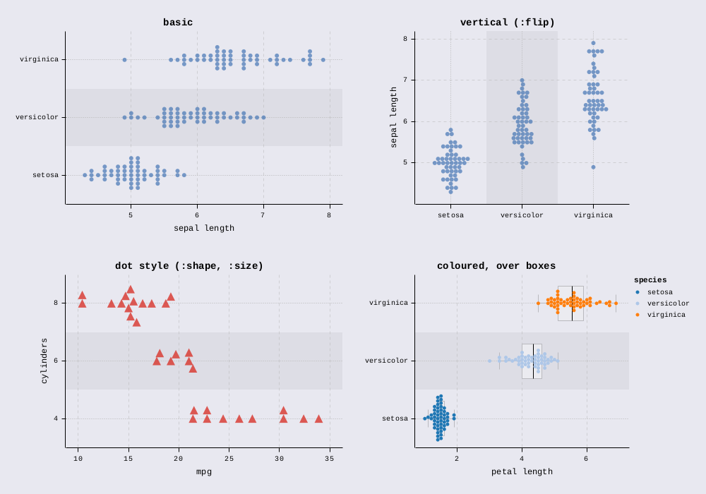
32.7 Strip plot and rug
32.7.1 Strip plot
Jittered points; :rng makes the jitter reproducible.
Source: lattice stripplot; seaborn stripplot (1, 2). Data: Barley yields, Minnesota 1931-1932, R lattice package barley (Immer et al. 1934; Fisher 1971; Cleveland 1993); licence: GPL (>= 2) (lattice).
(plot/render-image
{:data barley
:mapping {:x :yield :y :variety :color :year}
:scales {:color {:type :categorical}}
:charts [(chart/stripplot {:rng (r/rng :mersenne 1) :size 8 :jitter 0.1})]
:labels {:title "Barley yield by variety, dodged by year" :x "yield" :y :none}}
{:width 800 :height 550})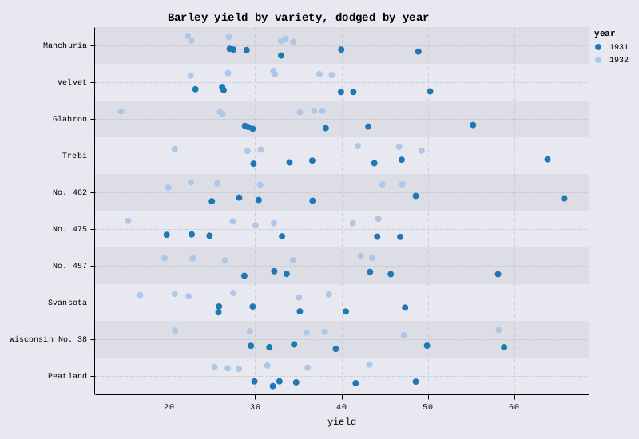
32.7.2 Rug
One line per value along the panel edge (:edge, the default without :y) or below y = 0 (:bottom).
Source: seaborn rugplot; lattice densityplot (1, 2). Data: Old Faithful geyser eruptions, R datasets package faithful (Härdle 1991; Azzalini & Bowman 1990); licence: Part of R (GPL-2 | GPL-3).
(plot/render-image
(plot/arrange [{:data faithful :mapping {:x :waiting} :charts [(chart/density) (chart/rug)]
:labels {:title "rug on the edge" :x "waiting [min]"}}
{:data faithful :mapping {:x :waiting} :charts [(chart/density) (chart/rug {:place :bottom :width 1.0})]
:labels {:title "rug below zero (:bottom)" :x "waiting [min]"}}]
{:columns 2})
{:width 900 :height 400})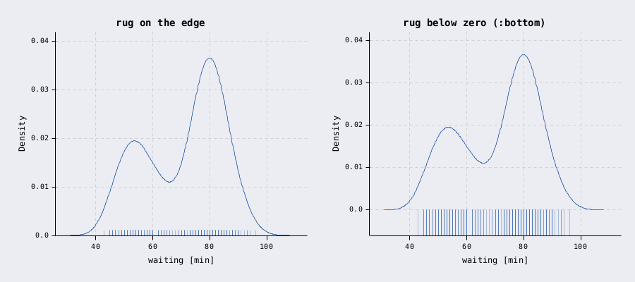
32.8 1d strips
Every strip chart also works on one variable alone: without :y it is placed in the middle of the panel (the rug, on the panel’s edge by default, takes :place :center) and the plot has no y axis.
Source: seaborn boxplot, swarmplot (1d) (1, 2). Data: Old Faithful geyser eruptions, R datasets package faithful (Härdle 1991; Azzalini & Bowman 1990); licence: Part of R (GPL-2 | GPL-3).
(plot/render-image
(plot/arrange (for [[title c] [["box" (chart/box)]
["violin" (chart/violin)]
["stripplot" (chart/stripplot {:rng (r/rng :mersenne 5) :jitter 0.3 :size 6})]
["beeswarm" (chart/beeswarm {:size 5})]
["rug" (chart/rug {:place :center :width 0.6})]
["extent :stddev" (chart/extent {:method :stddev})]]]
{:data faithful
:mapping {:x :waiting}
:charts [c]
:labels {:title title :x "waiting [min]"}})
{:columns 2})
{:width 900 :height 650})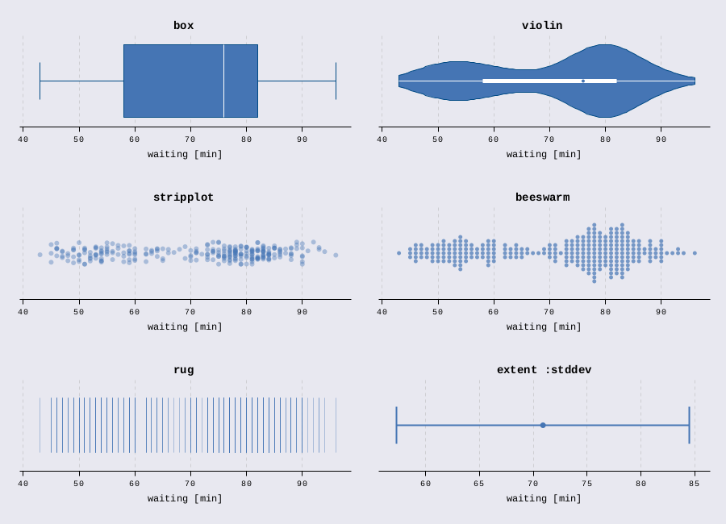
32.9 Empirical cumulative distribution
Source: lattice ecdfplot; seaborn ecdfplot (1, 2). Data: Edgar Anderson’s iris measurements, R datasets package iris (Anderson 1935; Fisher 1936); licence: Part of R (GPL-2 | GPL-3).
(plot/render-image
{:data iris
:mapping {:x :petal-length :color :species}
:charts [(chart/ecdf {:line-width 2})]
:labels {:title "ECDF of petal length by species" :x "petal length [cm]"}}
{:width 800 :height 450})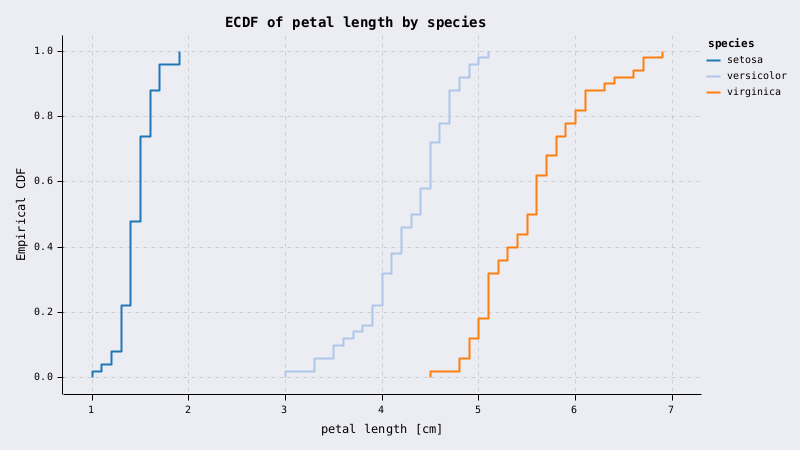
source: notebooks/use_cases/distribution.clj